Fundamentals of Computer
Computer
Computer एक electronic machine है जो user द्वारा दिए गए instructions के अनुसार कार्य करती है। यह input के रूप में data को accept करती है और उसका processing करके output के रूप में उपयोगी information प्रदान करती है। Computer storage की सहायता से data को सुरक्षित रखता है ताकि आवश्यकता पड़ने पर उसे reuse किया जा सके। यह high speed और accuracy के साथ कार्य करता है, इसलिए कम समय में अधिक कार्य कर सकता है। आज के समय में Computer का उपयोग education, banking, business, healthcare, communication तथा अन्य लगभग सभी क्षेत्रों में किया जाता है।
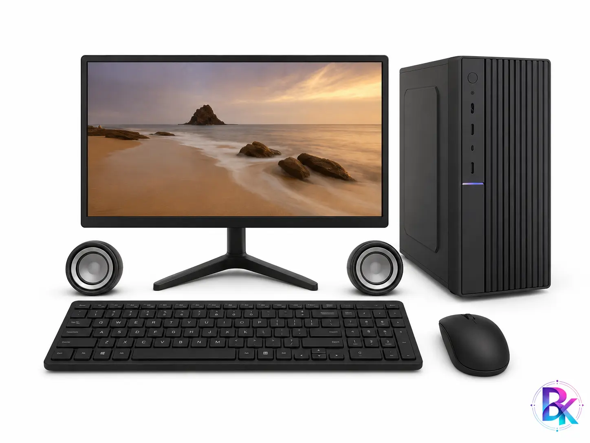
Historical Evolution of Computers
Computer का इतिहास लगभग 5000 वर्ष पुराना माना जाता है। प्रारंभिक समय में लोग गणना (Calculation) करने के लिए सरल उपकरणों का उपयोग करते थे। समय के साथ नई technology का विकास हुआ और धीरे-धीरे आधुनिक Computer का निर्माण हुआ। Computer के विकास की इस पूरी यात्रा को Historical Evolution of Computers कहा जाता है।
1. Abacus (3000 BC)
Abacus दुनिया का पहला calculating device माना जाता है। इसका आविष्कार चीन में हुआ था। इसमें लकड़ी के फ्रेम में लगे beads की सहायता से addition, subtraction, multiplication तथा division जैसी गणनाएँ की जाती थीं।
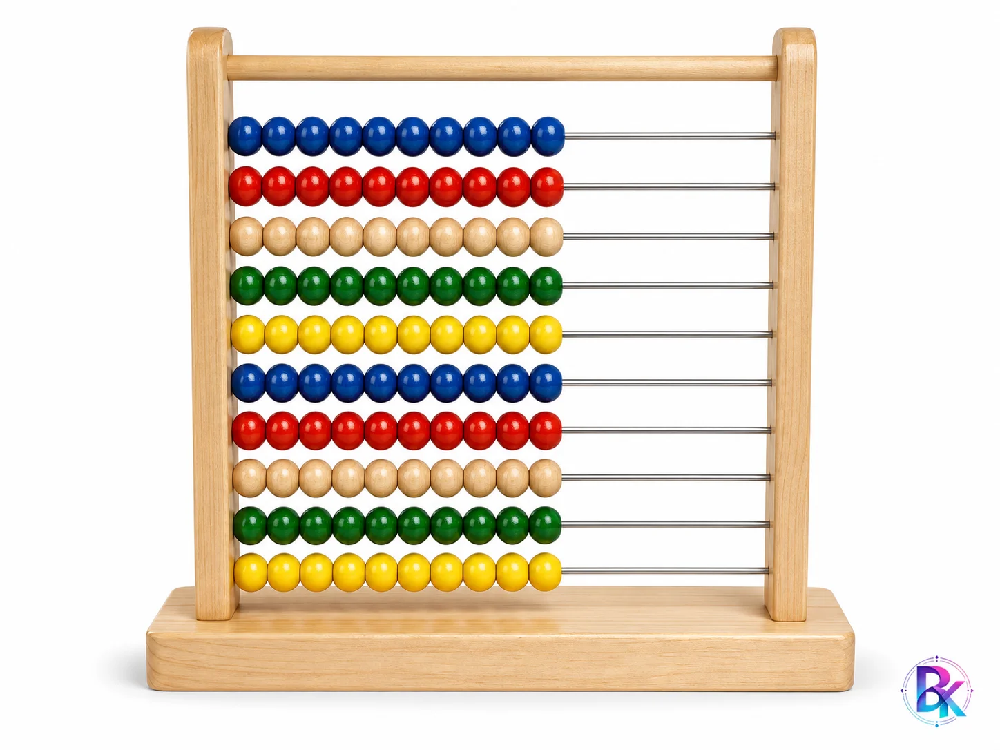
2. Napier's-bones-1617
john-napier-napier's Bones का आविष्कार किया। यह हड्डी या लकड़ी की पट्टियों से बना manual calculating device था, जिसका उपयोग मुख्य रूप से multiplication और division करने के लिए किया जाता था।
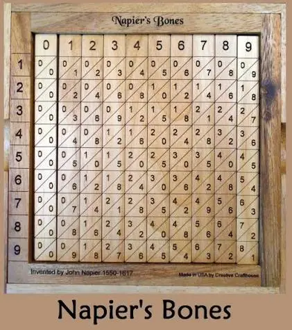
3. Pascaline (1642)
फ्रांस के वैज्ञानिक Blaise Pascal ने Pascaline नामक पहली mechanical calculating machine बनाई। यह मशीन addition और subtraction करने में सक्षम थी तथा व्यापार और कर (Tax) की गणना के लिए उपयोग की जाती थी।
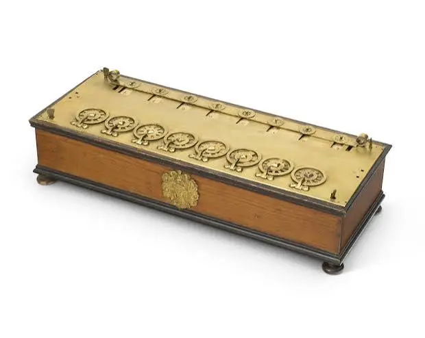
4. Stepped Reckoner (1673)
जर्मन वैज्ञानिक Gottfried Wilhelm Leibniz ने Stepped Reckoner का निर्माण किया। यह मशीन addition, subtraction, multiplication और division चारों प्रकार की गणनाएँ कर सकती थी। यह Pascaline से अधिक उन्नत मशीन थी।
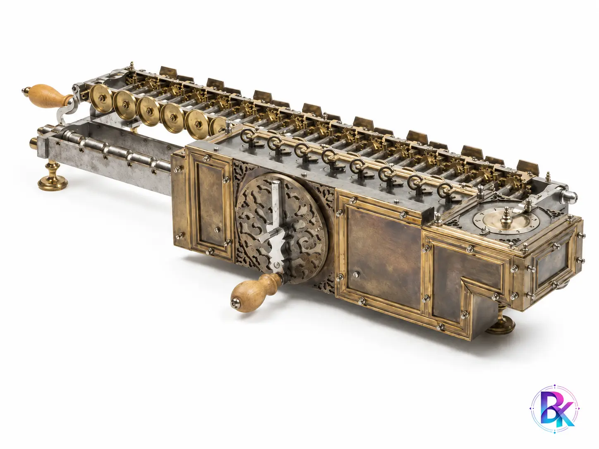
5. Difference Engine (1822)
अंग्रेज़ वैज्ञानिक Charles Babbage ने Difference Engine का डिज़ाइन तैयार किया। इसका उद्देश्य जटिल गणितीय tables को स्वतः तैयार करना था। यह आधुनिक Computer की दिशा में पहला महत्वपूर्ण कदम था।
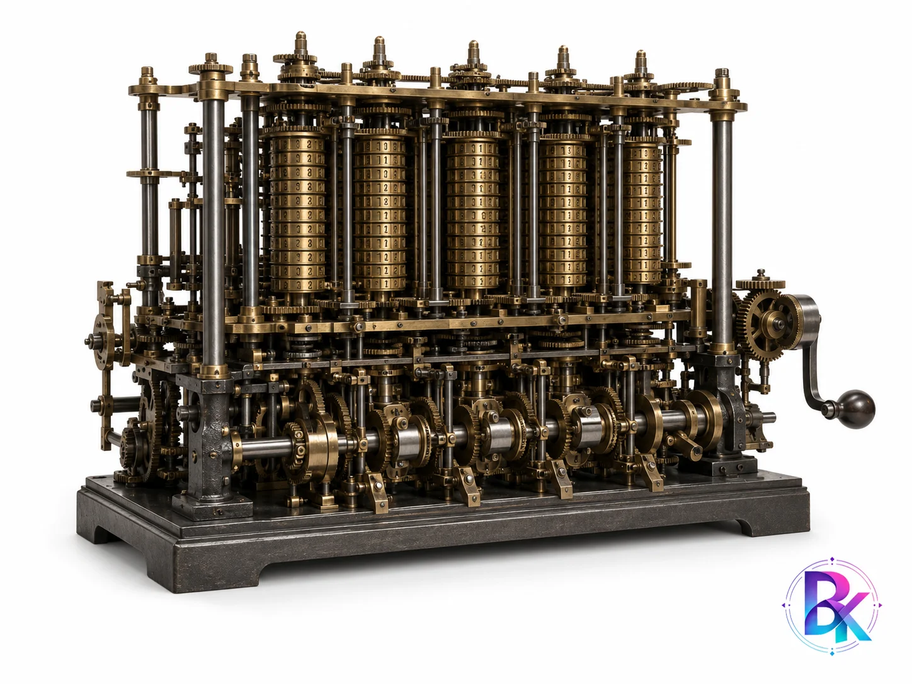
6. Analytical Engine (1837)
Charles Babbage ने Analytical Engine का डिज़ाइन प्रस्तुत किया। इसमें Input Unit, Memory, CPU और Output Unit जैसी आधुनिक Computer की लगभग सभी विशेषताएँ मौजूद थीं। इसी कारण उन्हें Father of Computer कहा जाता है।
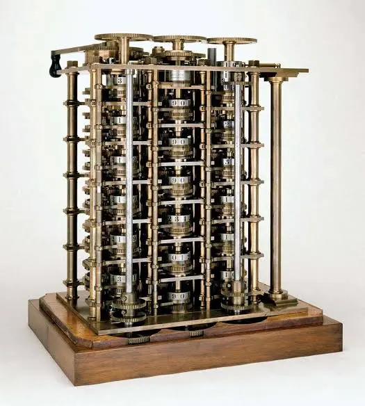
7. Tabulating Machine (1890)
Herman Hollerith ने Tabulating Machine का आविष्कार किया। इसमें Punch Cards का उपयोग किया गया, जिससे जनगणना (Census) का कार्य पहले की तुलना में बहुत तेज़ी से पूरा किया गया।
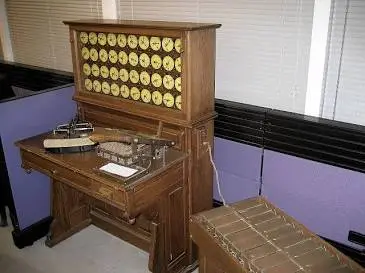
8. Modern Computer
Vacuum Tubes, Transistors, Integrated Circuits (IC) और Microprocessors के विकास के बाद आधुनिक Computer अस्तित्व में आए। आज के Computer high speed, high accuracy, बड़ी storage capacity और reliability के साथ कार्य करते हैं। इनका उपयोग education, business, banking, healthcare,communication, research तथा अन्य लगभग सभी क्षेत्रों में किया जाता है।
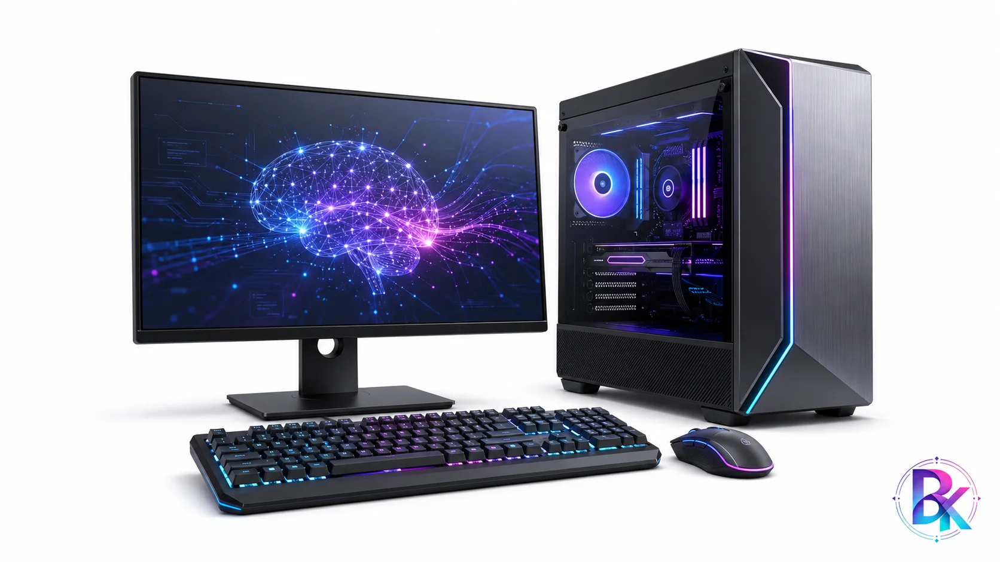
Charles Babbage and Ada Lovelace
Charles Babbage को “Father of Computer” कहा जाता है क्योंकि उनके Analytical Engine में input, memory, processing और output जैसे आधुनिक computer के मुख्य concepts मौजूद थे। Ada Lovelace ने Analytical Engine के लिए algorithm लिखा, इसलिए उन्हें first computer programmer कहा जाता है।
Generation of Computers
Computer की Generation का मतलब है Computer Technology में समय-समय पर हुए बड़े बदलाव। हर नई Generation में पुराने Computers की तुलना में Speed, Accuracy, Storage Capacity, Reliability और Performance में सुधार हुआ। इसके साथ ही Computer का Size छोटा, Power Consumption कम और Cost भी धीरे-धीरे कम होती गई। Generation का विभाजन मुख्य रूप से Computer में उपयोग होने वाली Electronic Technology के आधार पर किया जाता है।
Computer की Generation को मुख्य रूप से पाँच भागों में बाँटा गया है।
1. First Generation of Computers (1940-1956)
Vacuum Tube Based Computers
First Generation के Computers में Vacuum Tubes का उपयोग किया जाता था। Vacuum Tube एक Electronic Component थी, जो Electrical Signal को Control करने का कार्य करती थी। उस समय यही सबसे Advanced Technology थी, लेकिन इसकी कई Limitations भी थीं।
इन Computers का Size बहुत बड़ा होता था और इन्हें चलाने के लिए पूरा एक Room चाहिए होता था। Vacuum Tubes बहुत अधिक Heat उत्पन्न करती थीं, इसलिए इन्हें लगातार ठंडा रखने के लिए Air Conditioning System की आवश्यकता होती थी। ये Computers बहुत अधिक Electricity Consume करते थे और बार-बार खराब भी हो जाते थे।
इस Generation में Programming के लिए Machine Language (0 और 1) का उपयोग किया जाता था, जिसे समझना और लिखना बहुत कठिन था। Data Input के लिए Punch Cards तथा Paper Tape का उपयोग किया जाता था।
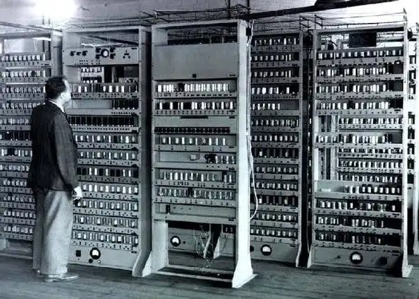
मुख्य विशेषताएँ (Characteristics)
- Vacuum Tubes का उपयोग।
- बहुत बड़ा Size।
- Electricity की अधिक खपत।
- अधिक Heat Produce करते थे।
- Machine Language में Programming।
- Reliability कम थी।
- Speed कम लेकिन उस समय के अनुसार अच्छी थी।
- Maintenance Cost बहुत अधिक थी।
Examples:ENIAC, EDVAC, EDSAC, UNIVAC-I
2. Second Generation of Computers (1956-1963)
Transistor Based Computers
Second Generation में Vacuum Tube की जगह Transistor का उपयोग शुरू हुआ। Transistor आकार में छोटा, तेज, अधिक Reliable और कम बिजली Consume करने वाला Electronic Device था। इसके आने से Computer Technology में बहुत बड़ा परिवर्तन आया।
Second Generation के Computers पहले की तुलना में छोटे, तेज और अधिक Efficient हो गए। इनमें Heat कम उत्पन्न होती थी तथा Maintenance भी आसान हो गया। इस Generation में Assembly Language तथा High Level Languages जैसे FORTRAN और COBOL का उपयोग शुरू हुआ।
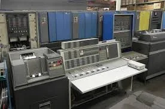
मुख्य विशेषताएँ (Characteristics)
- Transistor का उपयोग।
- Size पहले से छोटा।
- Speed अधिक।
- Heat कम Produce करते थे।
- Reliability बेहतर।
- Power Consumption कम।
- High Level Programming Languages का उपयोग।
Examples:IBM 1401, IBM 7094, CDC 1604, Honeywell 400
3. Third Generation of Computers (1964-1971)
Integrated Circuit Based Computers
Third Generation में Integrated Circuit (IC) का उपयोग किया गया। एक IC के अंदर हजारों Electronic Components लगाए जा सकते थे। इससे Computer का Size बहुत छोटा हो गया और उसकी Performance कई गुना बढ़ गई।
इस Generation में Computers अधिक Reliable, Fast और Efficient बने। पहली बार Operating System (OS) का व्यापक उपयोग शुरू हुआ। Keyboard और Monitor का उपयोग भी इसी समय लोकप्रिय हुआ।
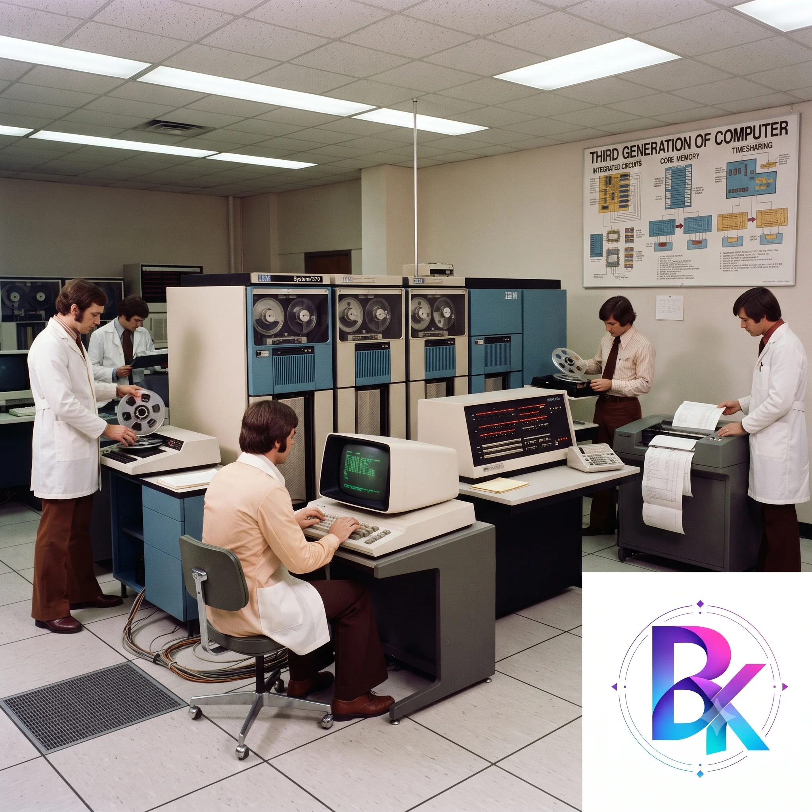
मुख्य विशेषताएँ (Characteristics)
- Integrated Circuit (IC) Technology।
- Size काफी छोटा।
- Speed बहुत अधिक।
- Heat कम।
- Reliability अधिक।
- Operating System का उपयोग।
- Multiprogramming की शुरुआत।
Examples: IBM System/360, PDP-8, PDP-11, Honeywell 6000
4. Fourth Generation of Computers (1971-1980)
Microprocessor Based Computers
Fourth Generation की सबसे बड़ी विशेषता Microprocessor का विकास था। Microprocessor एक छोटी Silicon Chip होती है जिसमें लाखों Transistors लगे होते हैं। इस Technology ने Computer को छोटा, शक्तिशाली और सस्ता बना दिया।
आज उपयोग किए जाने वाले Desktop Computer, Laptop, Tablet और कई प्रकार के Embedded Systems इसी Generation के अंतर्गत आते हैं। इस Generation में GUI (Graphical User Interface), Networking, Internet, Database Management, Multitasking जैसी Technologies का तेजी से विकास हुआ।
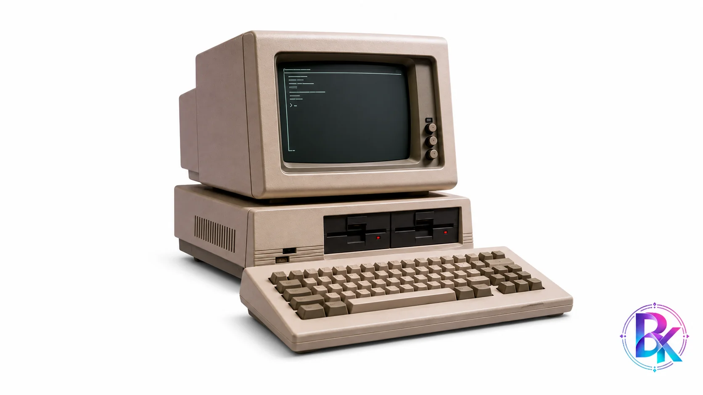
मुख्य विशेषताएँ (Characteristics)
- Microprocessor Technology।
- High Storage Capacity।
- GUI आधारित Operating System।
- Networking और Internet Support।
- Low Power Consumption।
- Portable Devices का विकास।
Examples: IBM PC, Desktop Computer, Apple Macintosh, Laptop, Tablet
5. Fifth Generation of Computers (1980- present)
Artificial Intelligence Based Computers
Fifth Generation वर्तमान और भविष्य की सबसे Advanced Generation मानी जाती है। इसका मुख्य उद्देश्य ऐसे Computers बनाना है जो Artificial Intelligence (AI) की सहायता से सोच सकें, सीख सकें, निर्णय ले सकें तथा Human की तरह समस्याओं का समाधान कर सकें।
इस Generation में Machine Learning, Deep Learning, Natural Language Processing (NLP), Robotics, Cloud Computing, Quantum Computing और Expert Systems जैसी Technologies का उपयोग किया जा रहा है।
आज के Virtual Assistants, Self Driving Cars, Chatbots, Face Recognition Systems तथा AI आधारित Medical Systems इसी Generation के उदाहरण हैं।
मुख्य विशेषताएँ (Characteristics)
- Artificial Intelligence आधारित Technology।
- Self Learning Capability।
- Natural Language Processing।
- Voice Recognition।
- Robotics।
- Machine Learning।
- Cloud Computing।
- Quantum Computing पर Research।
Examples: Chatgpt, Google Gemini, Smart Assistent, AI Robots
Classification of Computers Based on Size
Computer को उनके Size, Storage Capacity, Processing Speed तथा Performance के आधार पर मुख्यतः चार भागों में बाँटा जाता है।
1. Micro Computer
Micro Computer सबसे छोटा और सबसे अधिक उपयोग किया जाने वाला Computer है। इसमें एक Microprocessor का उपयोग किया जाता है, इसलिए इसे Micro Computer कहा जाता है। यह एक समय में सामान्यतः एक User द्वारा उपयोग किया जाता है।
आज घर, स्कूल, कॉलेज, Office, Bank, Hospital तथा Business में सबसे अधिक इसी प्रकार के Computer का उपयोग किया जाता है। आधुनिक Desktop, Laptop, Tablet, Smartphone आदि Micro Computer के उदाहरण हैं।
Examples: Desktop Computer, Laptop, Tablet, Smartphone
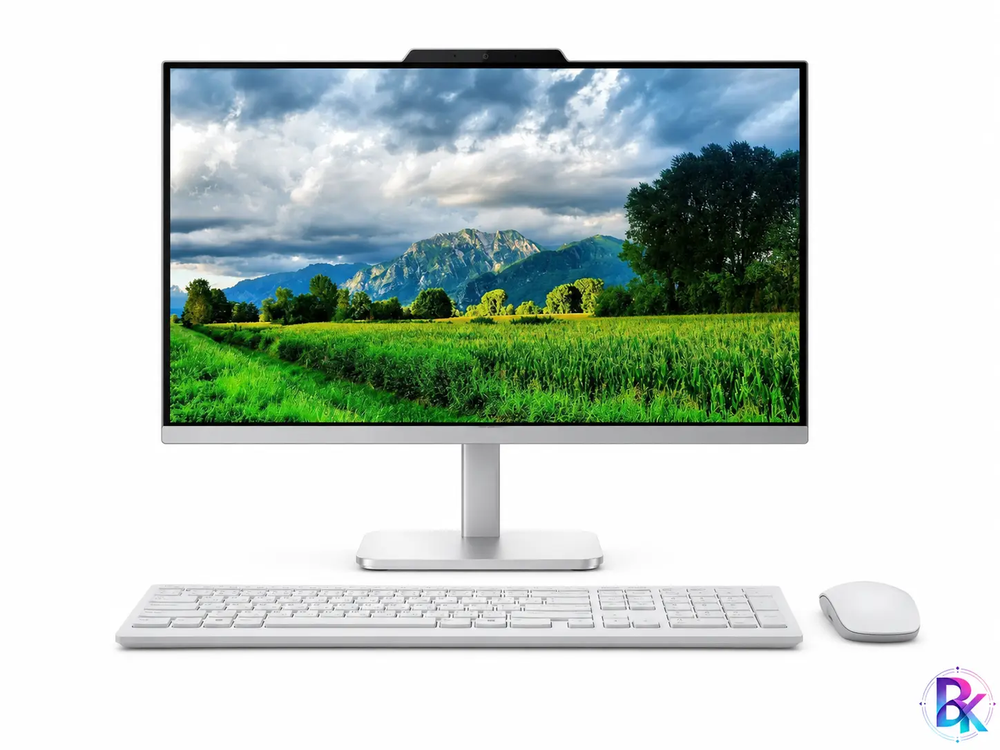
2. Mini Computer
Mini Computer का Size और Performance Micro Computer से अधिक तथा Mainframe Computer से कम होता है। यह एक साथ कई Users को Support कर सकता है।
इनका उपयोग ऐसे स्थानों पर किया जाता है जहाँ एक साथ कई लोगों को Data Process करना होता है, जैसे छोटे उद्योग, कॉलेज, बैंक और Research Center।
Examples: PDP-11, VAX Serie
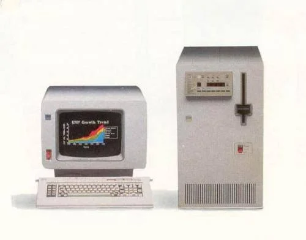
3. Mainframe Computer
Mainframe Computer बहुत बड़े और अत्यधिक शक्तिशाली Computer होते हैं। ये एक साथ हजारों Users तथा लाखों Transactions को Handle कर सकते हैं।
इनका उपयोग बड़े Organizations में किया जाता है जहाँ बहुत अधिक मात्रा में Data को सुरक्षित तरीके से Process करना होता है।
Examples: IBM zSeries, IBM System z
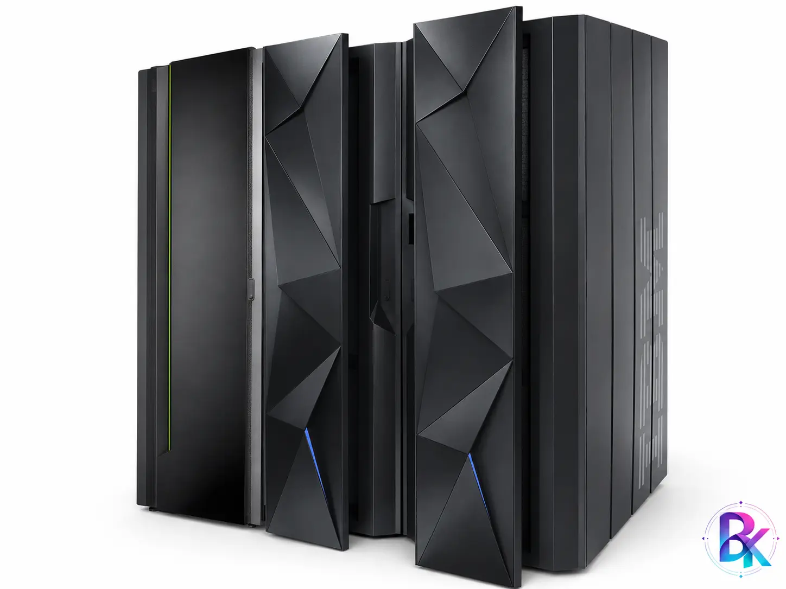
4. Super Computer
Super Computer दुनिया का सबसे शक्तिशाली और सबसे तेज Computer होता है। इसमें हजारों Processor एक साथ कार्य करते हैं, जिससे यह प्रति सेकंड खरबों (Trillions) Calculations कर सकता है।
इनका उपयोग अत्यधिक जटिल (Complex) Scientific और Engineering Calculations के लिए किया जाता है।
Examples: Frontier, Fugaku, PARAM Siddhi-AI
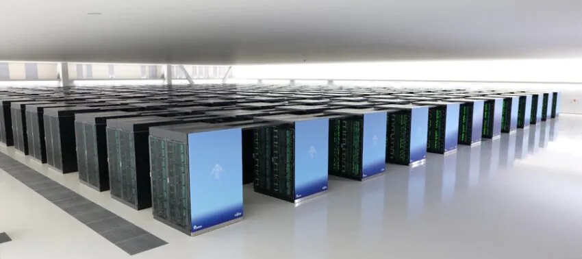
Notes
➡️दुनिया का पहला Super Computer CDC 6600 था, जिसे 1964 में प्रसिद्ध Computer Engineer Seymour Cray ने विकसित किया था।
➡️भारत का पहला Super Computer PARAM 8000 था, जिसे 1991 में Centre for Development of Advanced Computing (C-DAC), Pune द्वारा विकसित किया गया। इसका विकास Vijay Bhatkar के नेतृत्व में किया गया था।
Applications of computers
1. Education
Education के क्षेत्र में Computer का उपयोग तेजी से बढ़ रहा है। आज Students Online Classes, Digital Notes, E-Books, Virtual Labs, Smart Classes तथा Online Examinations के माध्यम से पढ़ाई कर रहे हैं। Teachers भी Presentation, Assignment और Result तैयार करने के लिए Computer का उपयोग करते हैं।
2. Business
Business में Computer का उपयोग Accounts, Billing, Inventory Management, Payroll, Sales Report तथा Customer Data को Manage करने के लिए किया जाता है। Computer की सहायता से बड़े Business को भी आसानी से नियंत्रित किया जा सकता है।
3. Banking
आज लगभग सभी Banking Services Computer आधारित हैं। Bank में Customer Account, Money Transfer, ATM, Internet Banking, Mobile Banking तथा Loan Management जैसे कार्य Computer द्वारा किए जाते हैं।
4. Healthcare
Hospital और Medical Field में Computer का उपयोग Patient Records, Diagnosis, Medical Imaging, Laboratory Reports तथा Surgery में किया जाता है। आधुनिक Medical Equipment भी Computer द्वारा नियंत्रित किए जाते हैं।
5. Science and Research
Scientific Research में Computer का उपयोग बड़े-बड़े Calculations, Data Analysis, Simulation तथा Research Projects में किया जाता है। Super Computers की सहायता से कठिन Scientific Problems का समाधान किया जाता है।
6. Communication
Computer ने Communication को बहुत आसान और तेज बना दिया है। आज लोग दुनिया के किसी भी स्थान पर कुछ ही सेकंड में Message, E-mail, Video Call तथा Documents भेज सकते हैं।
7. Entertainment
Entertainment Industry में Computer का उपयोग Movies, Music, Animation, Gaming, Video Editing तथा Graphic Designing के लिए किया जाता है।
8. Government
Government Offices में Computer का उपयोग नागरिकों का Data Store करने, Documents तैयार करने, Tax Collection, Election Management तथा Digital Services उपलब्ध कराने के लिए किया जाता है।
9. E-Commerce
आज Online Shopping पूरी तरह Computer Technology पर आधारित है। Computer की सहायता से लोग घर बैठे Products खरीद और बेच सकते हैं।
10. Artificial Intelligence (AI) and Robotics
आज Computer का उपयोग Artificial Intelligence (AI), Machine Learning, Robotics, Natural Language Processing (NLP) तथा Automation में किया जा रहा है। AI आधारित Systems Human की तरह सीख सकते हैं और निर्णय लेने में सहायता करते हैं।
Usefulness and Applications
- Education: smart classes, online learning, examinations
- Business: accounting, billing, inventory, payroll
- Banking: ATM, online transactions, customer records
- Healthcare: diagnosis, patient records, scanning
- Science: research, simulation, data analysis
- Communication: email, video conference, messaging
- Entertainment: games, music, movies, animation
- Government: records, e-governance, identification systems
Advantages and Limitations
| Advantages | Limitations |
|---|---|
| High speed and accuracy | No self-intelligence |
| Large storage capacity | Depends on correct instructions |
| Automation and multitasking | Security and privacy risks |
| Reliability and consistency | Requires power and maintenance |
Block Diagram along its components and characteristics
Computer एक Electronic Device है जो Input प्राप्त करता है, उसे Process करता है, आवश्यक होने पर Storage में सुरक्षित रखता है और अंत में Output प्रदान करता है। Computer System के कार्य करने की प्रक्रिया को समझाने के लिए Block Diagram का उपयोग किया जाता है।
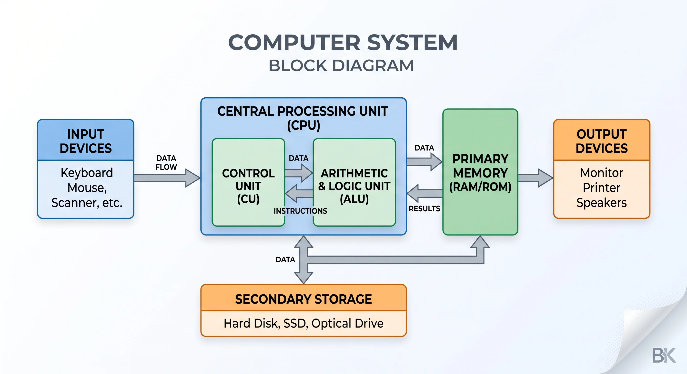
Components of Computer System
1. Input Unit (इनपुट यूनिट)
Input Unit वह भाग है जिसके माध्यम से User Computer को Data तथा Instructions देता है। यह User द्वारा दिए गए Data को Machine Readable Form (Binary) में बदलकर CPU तक भेजती है।
मुख्य कार्य (Functions)
- User से Data प्राप्त करना।
- Data को Binary Form में Convert करना।
- CPU को Data भेजना।
Examples: Keyboard, Mouse, Scanner, Microphone, Webcam, Barcode Reader, Joystick
2. Central Processing Unit (CPU)
CPU (Central Processing Unit) को Computer का Brain कहा जाता है। यह सभी Instructions को Execute करता है तथा पूरे Computer System को Control करता है। Computer की Speed और Performance मुख्य रूप से CPU पर निर्भर करती है।
CPU के मुख्य तीन भाग होते हैं:
(a) Arithmetic Logic Unit (ALU)
ALU सभी Arithmetic Operations तथा Logical Operations को Perform करता है।
Mathematical Calculations करना, Logical Comparison करना।
Arithmetic Operations
- Addition (+)
- Subtraction (−)
- Multiplication (×)
- Division (÷)
Logical Operations
- Greater Than (>)
- Less Than (<)< /li>
- Equal To (=)
- AND, OR, NOT
(b) Control Unit (CU)
Control Unit (CU) पूरे Computer की सभी गतिविधियों को नियंत्रित (Control) और समन्वित (Coordinate) करती है। यह स्वयं कोई Calculation नहीं करती, बल्कि सभी Components को निर्देश देती है कि कब और कैसे कार्य करना है।
मुख्य कार्य
- Input Unit को Control करना।
- Memory से Data प्राप्त करना।
- ALU को Instructions देना।
- Output Unit तक Result पहुँचाना।
(c) Registers
Registers CPU के अंदर स्थित बहुत छोटी और अत्यधिक तेज़ (Very High Speed) Memory होती है। इनमें वही Data अस्थायी (Temporary) रूप से रखा जाता है जिस पर CPU तुरंत कार्य कर रहा होता है।
मुख्य कार्य
- Temporary Data Store करना।
- Processing Speed बढ़ाना।
- CPU को तुरंत Data उपलब्ध कराना।
3. Memory Unit (MU)
Memory Unit का कार्य Data, Instructions तथा Processing के दौरान प्राप्त Result को Store करना होता है।
Memory मुख्यतः दो प्रकार की होती है।
(a) Primary Memory
Primary Memory सीधे CPU से जुड़ी होती है। इसमें वही Data Store रहता है जिस पर वर्तमान समय में कार्य हो रहा होता है।
Types:- RAM (Random Access Memory)
- ROM (Read Only Memory)
- Cache Memory
(b) Secondary Memory
Secondary Memory का उपयोग Data को Permanent रूप से Store करने के लिए किया जाता है।
Examples: Hard Disk (HDD), SSD, CD/DVD, Pen Drive, Memory Card
4. Output Unit (आउटपुट यूनिट)
Output Unit Computer द्वारा Process किए गए Result को User तक पहुँचाती है। यह Binary Data को Human Readable Form में बदलती है।
मुख्य कार्य
- Result Display करना।
- Information Print करना।
- Audio एवं Video Output देना।
Examples: Monitor, Printer, Speaker, Projector, Plotter
Working of Block Diagram
1.User Input Unit की सहायता से Data एवं Instructions देता है।
2.Input Unit उस Data को Binary Form में बदलकर CPU को भेजती है।
3.Control Unit (CU) सभी Components को नियंत्रित करती है।
4.ALU आवश्यक Calculation तथा Logical Operations करता है।
5.आवश्यकता पड़ने पर Data Memory Unit में Store या Retrieve किया जाता है।
6.Processing पूर्ण होने के बाद Result Output Unit के माध्यम से User को प्राप्त होता है।
Block Diagram of Computer
Block diagram computer के major functional units और उनके बीच data flow को दर्शाता है।
Characteristics of Computer
1. High Speed
Computer बहुत तेज़ गति से लाखों-करोड़ों Calculations कुछ ही Seconds में कर सकता है।
2. Accuracy
यदि सही Data एवं Instructions दिए जाएँ, तो Computer लगभग 100% Accurate Result प्रदान करता है।
3. Automation
Program शुरू होने के बाद Computer बिना बार-बार Human Intervention के स्वयं कार्य करता है।
4. Diligence
Computer लगातार कई घंटों तक बिना थके समान Efficiency से कार्य कर सकता है।
5. Large Storage Capacity
Computer बहुत बड़ी मात्रा में Data Store कर सकता है तथा आवश्यकता पड़ने पर तुरंत Retrieve भी कर सकता है।
6. Reliability
Computer लगातार लंबे समय तक Stable एवं Reliable Performance देता है।
7. Versatility
एक ही Computer अलग-अलग प्रकार के कार्य जैसे Programming, Gaming, Banking, Designing, Research तथा Education कर सकता है।
8. Multitasking
Modern Computer एक साथ कई Applications को Execute कर सकता है।
9. Consistency
Computer बार-बार एक ही कार्य को समान Speed और Accuracy के साथ करता है।
10. Communication Capability
Computer Internet एवं Network की सहायता से दुनिया के किसी भी स्थान पर Information भेज और प्राप्त कर सकता है।
Relevance of Speed and Word Length for CPU Performance
CPU Performance का मतलब है कि Computer कितनी तेजी, Accuracy और Efficiency के साथ Instructions को Execute कर सकता है। CPU की Performance कई Factors पर depend करती है, जैसे Clock Speed, Word Length, Cache Memory, Number of Cores, Architecture और Bus Width। इनमें से Speed और Word Length CPU Performance को समझने के लिए बहुत important Factors माने जाते हैं।
Simple Concept Diagram
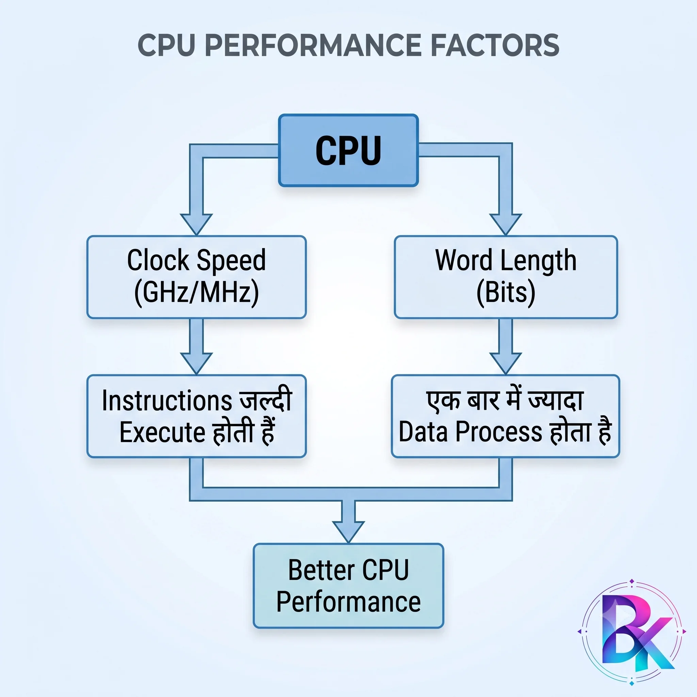
1. Relevance of Speed for CPU Performance
CPU की Speed यह बताती है कि CPU एक Second में कितने Instructions या Operations perform कर सकता है। CPU Speed को सामान्यतः MHz (Megahertz) या GHz (Gigahertz) में मापा जाता है।
अगर किसी CPU की Clock Speed अधिक है, तो वह कम समय में अधिक Instructions Execute कर सकता है। इसलिए Higher Clock Speed वाला CPU सामान्यतः Fast Processing देता है।
Example
- 1 GHz CPU लगभग 1 Billion Cycles per Second perform कर सकता है।
- 3 GHz CPU लगभग 3 Billion Cycles per Second perform कर सकता है।
इसका मतलब यह है कि 3 GHz CPU, 1 GHz CPU की तुलना में अधिक Processing Cycles complete कर सकता है। लेकिन केवल Clock Speed ही Performance का पूरा आधार नहीं है, क्योंकि Architecture, Cache, Cores और Instruction Set भी Performance को प्रभावित करते हैं।
Importance of CPU Speed
1. Fast Instruction Execution
CPU Speed जितनी अधिक होगी, Instructions उतनी जल्दी Execute होंगे। इससे Program जल्दी Run होता है और User को Fast Response मिलता है।
2. Better Multitasking
High Speed CPU एक साथ कई Applications जैसे Browser, Word Processor, Media Player और Programming Tools को अच्छे तरीके से Handle कर सकता है।
3. Improved System Response
CPU Speed अधिक होने पर System जल्दी Respond करता है। Applications Open होने, Files Load होने और Commands Execute होने में कम समय लगता है।
4. Useful for Heavy Tasks
Gaming, Video Editing, Graphic Designing, Scientific Calculation और Programming जैसे Heavy Tasks के लिए High Speed CPU बहुत important होता है।
2. Relevance of Word Length for CPU Performance
Word Length का मतलब है कि CPU एक बार में कितने Bits Data को Process कर सकता है। Word Length को Bits में मापा जाता है, जैसे 8-bit, 16-bit, 32-bit और 64-bit।
यदि CPU की Word Length अधिक है, तो वह एक ही Operation में ज्यादा Data Process कर सकता है। इससे Processing Fast और Efficient हो जाती है।
Example
- 8-bit CPU एक बार में 8 Bits Data Process करता है।
- 32-bit CPU एक बार में 32 Bits Data Process करता है।
- 64-bit CPU एक बार में 64 Bits Data Process करता है।
इसलिए 64-bit CPU, 32-bit CPU की तुलना में अधिक Data एक साथ Handle कर सकता है। यह Large Memory Access, Complex Calculation और Modern Applications के लिए अधिक Suitable होता है।
Importance of Word Length
1. More Data Processing at a Time
अधिक Word Length वाला CPU एक ही समय में ज्यादा Bits Process कर सकता है। इससे बड़े Data Blocks को जल्दी Process किया जा सकता है।
2. Better Accuracy in Calculation
बड़ी Word Length Complex और Large Numerical Calculations में बेहतर Accuracy देने में मदद करती है।
3. Large Memory Addressing
Word Length अधिक होने पर CPU अधिक Memory Locations को Address कर सकता है। इसी कारण 64-bit Processors ज्यादा RAM को Support कर सकते हैं।
4. Better Performance for Modern Software
Modern Operating Systems और Applications ज्यादातर 64-bit Architecture पर आधारित होते हैं। इसलिए 64-bit CPU Modern Software को अधिक Efficient तरीके से Run कर सकता है।
Difference Between CPU Speed and Word Length
| Basis | CPU Speed | Word Length |
|---|---|---|
| Meaning | CPU एक Second में कितने Cycles perform करता है। | CPU एक बार में कितने Bits Process करता है। |
| Measured In | MHz या GHz | Bits |
| Main Effect | Instruction Execution Fast करता है। | एक बार में ज्यादा Data Process करता है। |
| Example | 2.4 GHz, 3.2 GHz | 32-bit, 64-bit |
| Importance | Speed और Response Time Improve करता है। | Memory Handling और Data Processing Improve करता है। |
Limitations
- केवल High Clock Speed होने से CPU हमेशा Fast नहीं होता।
- Processor Architecture भी Performance को बहुत प्रभावित करती है।
- RAM कम होने पर High Speed CPU भी Slow महसूस हो सकता है।
- Old Software 64-bit CPU की पूरी Capability का उपयोग नहीं कर पाते।
- Heating और Power Consumption भी Performance को प्रभावित करते हैं।
Recognize the Current Family of CPUs Used in Computers
Modern Computers में उपयोग होने वाले CPU Families समय के साथ लगातार विकसित हुए हैं। वर्तमान समय में Desktop, Laptop, Workstation और Server Computers में मुख्य रूप से x86-64 Architecture तथा ARM Architecture आधारित Processors का उपयोग किया जाता है। अलग-अलग CPU Families अलग Performance, Power Efficiency तथा Use Case के लिए Design की जाती हैं।
Evolution of CPU Family
8086 → 80286 → 80386 → 80486 → Pentium → Core Series → Modern Core / Ryzen
Current CPU Families
1. Intel Core Family
यह वर्तमान समय की सबसे लोकप्रिय CPU Family है। इसका उपयोग Desktop, Laptop और Gaming Computers में किया जाता है।
- Intel Core i3 – Entry Level
- Intel Core i5 – Mainstream
- Intel Core i7 – High Performance
- Intel Core i9 – Enthusiast / Professional
- Intel Core Ultra – AI आधारित नई Generation
2. AMD Ryzen Family
AMD Ryzen Processors High Performance, Multitasking तथा Gaming के लिए प्रसिद्ध हैं।
- Ryzen 3
- Ryzen 5
- Ryzen 7
- Ryzen 9
- Ryzen Threadripper (Workstation)
3. Intel Xeon Family
Server, Data Center, Scientific Computing तथा Enterprise Systems में उपयोग किए जाते हैं।
4. AMD EPYC Family
High-End Servers, Cloud Computing और Virtualization के लिए Design किए गए Processors।
5. ARM Processor Family
ARM Architecture Low Power Consumption के लिए प्रसिद्ध है। इसका उपयोग Smartphones, Tablets, Embedded Systems तथा कुछ Modern Computers में किया जाता है।
- Apple M-Series (M1, M2, M3, M4)
- Qualcomm Snapdragon X Series
Comparison of Current CPU Families
| CPU Family | Main Use | Features |
|---|---|---|
| Intel Core | Desktop / Laptop | Balanced Performance |
| AMD Ryzen | Gaming / Productivity | High Multi-Core Performance |
| Intel Xeon | Servers | Reliability & Large Workloads |
| AMD EPYC | Cloud & Enterprise | Many Cores, High Efficiency |
| ARM Family | Mobile & Modern PCs | Low Power, High Efficiency |
Characteristics of Modern CPU Families
- 64-bit Architecture
- Multi-Core Technology
- Large Cache Memory
- Integrated Graphics (Many Models)
- AI Acceleration Support
- Low Power Consumption
- Virtualization Support
- High Security Features
Types of Memory - RAM and ROM
Memory Computer का वह भाग है जहाँ Data, Instructions तथा Programs Store किए जाते हैं। CPU किसी भी Program को Execute करने से पहले Memory से ही Data प्राप्त करता है। Primary Memory मुख्यतः दो प्रकार की होती है - RAM और ROM.
Classification of Primary Memory
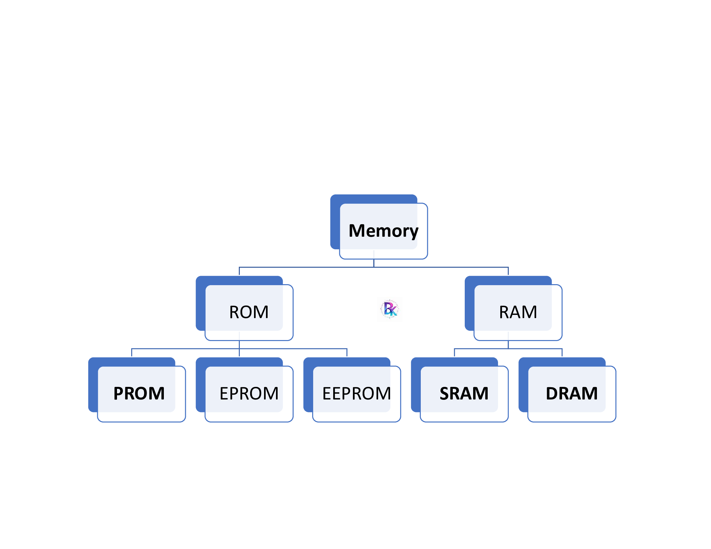
1. RAM (Random Access Memory)
RAM एक Volatile Memory है। इसका अर्थ है कि Computer या Laptop बंद होते ही इसमें Store किया गया Data Delete हो जाता है। जब कोई Software, Game या Browser Run होता है तो उसका Data सबसे पहले RAM में Load होता है ताकि CPU उसे बहुत तेजी से Process कर सके।
Main Characteristics
- Volatile Memory
- High Speed
- Read and Write दोनों संभव
- Temporary Storage
- CPU Direct Access करता है
Uses of RAM
- Operating System Run करना
- Software और Applications Execute करना
- Gaming
- Video Editing
- Multitasking
Real Life Example
RAM को Study Table की तरह समझिए। जब आप पढ़ाई करते हैं तो जिन Books की जरूरत होती है उन्हें Table पर रखते हैं। काम पूरा होने पर Books वापस अलमारी में रख दी जाती हैं। इसी प्रकार Computer चलते समय Data RAM में रहता है और Power Off होते ही हट जाता है।
Example
- 8 GB DDR4 RAM
- 16 GB DDR5 RAM
- 32 GB DDR5 RAM
Types of RAM
SRAM (Static RAM)
SRAM बहुत Fast होती है तथा Refresh की आवश्यकता नहीं होती। इसका उपयोग मुख्य रूप से Cache Memory में किया जाता है। यह महंगी होती है लेकिन Performance बहुत अच्छी होती है।
DRAM (Dynamic RAM)
DRAM को बार-बार Refresh करना पड़ता है। यह SRAM की तुलना में धीमी लेकिन सस्ती होती है। अधिकांश Computers में Main Memory के रूप में DRAM का उपयोग किया जाता है।
2. ROM (Read Only Memory)
ROM एक Non-Volatile Memory है। इसमें Store Data Computer बंद होने के बाद भी सुरक्षित रहता है। ROM में Computer को Start करने वाले आवश्यक Programs जैसे BIOS या Firmware Store रहते हैं।
Main Characteristics
- Non-Volatile Memory
- Permanent Storage
- Data आसानी से Delete नहीं होता
- मुख्यतः Read किया जाता है
Uses of ROM
- BIOS Store करना
- Firmware Store करना
- Boot Process
- Embedded Systems
Real Life Example
ROM को School Rule Book की तरह समझिए। नियम एक बार लिख दिए जाते हैं और हर दिन वही Follow किए जाते हैं। इन्हें रोज़ बदलने की आवश्यकता नहीं होती। उसी प्रकार ROM में Stored Instructions हमेशा सुरक्षित रहती हैं।
Types of ROM
- PROM (Programmable ROM) - एक बार Program किया जा सकता है।
- EPROM (Erasable PROM) - Ultraviolet Light से Erase किया जा सकता है।
- EEPROM (Electrically Erasable PROM) - Electricity की सहायता से Erase और Reprogram किया जा सकता है।
- Flash Memory - EEPROM का Advanced Form, Pen Drive और SSD में उपयोग।
Difference Between RAM and ROM
| Basis | RAM | ROM |
|---|---|---|
| Full Form | Random Access Memory | Read Only Memory |
| Nature | Volatile | Non-Volatile |
| Storage | Temporary | Permanent |
| Speed | Very Fast | Slower than RAM |
| Read/Write | Read & Write | Mainly Read |
| Power Off | Data Lost | Data Safe |
| Real Life Example | Study Table | Rule Book |
Keyboard
Keyboard Computer का एक important Input Device है। इसका उपयोग Computer में Text, Numbers, Symbols और Commands Enter करने के लिए किया जाता है। Keyboard Computer का सबसे common और basic Input Device माना जाता है। इसकी सहायता से User Documents लिख सकता है, Programs बना सकता है, Search कर सकता है और Computer को कई प्रकार की Commands दे सकता है।Keyboard में बहुत सारी Keys होती हैं। हर Key का अपना अलग Function होता है। Keyboard का Layout Typewriter से मिलता-जुलता होता है, इसलिए इसे सीखना और उपयोग करना आसान होता है।
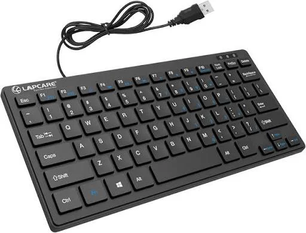
Functions of Keyboard
- Text और Numbers Type करना।
- Computer को Commands देना।
- Documents, Emails और Reports तैयार करना।
- Programming Code लिखना।
- Shortcut Keys की सहायता से Fast Work करना।
- Games और Software को Control करना।
- Data Entry और Form Filling करना।
Main Parts / Keys of Keyboard
1. Alphabet Keys
Alphabet Keys A से Z तक होती हैं। इनका उपयोग Words, Sentences और Paragraphs Type करने के लिए किया जाता है।
2. Number Keys
Number Keys 0 से 9 तक होती हैं। इनका उपयोग Numbers Type करने के लिए किया जाता है। Keyboard के ऊपर और Numeric Keypad दोनों जगह Number Keys होती हैं।
3. Function Keys
Function Keys F1 से F12 तक होती हैं। इनका उपयोग अलग-अलग Special Functions के लिए किया जाता है। जैसे F1 Help के लिए, F5 Refresh के लिए और F11 Full Screen के लिए use होती है।
4. Control Keys
Control Keys में Ctrl, Alt, Shift, Esc आदि आती हैं। इनका उपयोग दूसरी Keys के साथ मिलकर Shortcut Commands देने के लिए किया जाता है।
5. Navigation Keys
Navigation Keys का उपयोग Cursor को Move करने या Page में Navigate करने के लिए किया जाता है। इनमें Arrow Keys, Home, End, Page Up और Page Down शामिल हैं।
6. Numeric Keypad
Numeric Keypad Keyboard के Right Side में होता है। इसका उपयोग Fast Numerical Entry के लिए किया जाता है। Accounting और Data Entry में यह बहुत useful होता है।
7. Special Keys
Enter, Spacebar, Backspace, Delete, Tab, Caps Lock और Insert जैसी Keys Special Keys कहलाती हैं। इनका उपयोग Typing और Editing में होता है।
Types of Keyboard
1. Standard Keyboard
Standard Keyboard सामान्य Computer और Office Work में उपयोग किया जाता है। इसमें लगभग 101 से 104 Keys होती हैं।
2. Multimedia Keyboard
Multimedia Keyboard में Volume Control, Play, Pause, Next, Previous जैसी Extra Keys होती हैं। इसका उपयोग Music और Video Control करने के लिए किया जाता है।
3. Wireless Keyboard
Wireless Keyboard Bluetooth या USB Receiver की सहायता से Computer से Connect होता है। इसमें Wire नहीं होती, इसलिए यह Portable और Clean Setup के लिए अच्छा होता है।
4. Mechanical Keyboard
Mechanical Keyboard में हर Key के नीचे अलग Mechanical Switch होता है। यह Fast Typing, Gaming और Professional Work के लिए अच्छा माना जाता है।
5. Gaming Keyboard
Gaming Keyboard विशेष रूप से Gamers के लिए बनाया जाता है। इसमें RGB Lights, Fast Response, Extra Keys और Strong Build Quality होती है।
6. Virtual Keyboard
Virtual Keyboard Screen पर दिखाई देता है। Touch Screen Devices और On-Screen Typing में इसका उपयोग होता है।
Mouse
Mouse Computer का एक important Input Device है। इसका उपयोग Computer Screen पर Pointer या Cursor को Move करने, Items को Select करने, Files और Applications को Open करने तथा Commands देने के लिए किया जाता है। Mouse को Pointing Device भी कहा जाता है क्योंकि यह Screen पर किसी भी Object की ओर Point करने में मदद करता है।
Graphical User Interface यानी GUI वाले Computers में Mouse बहुत useful device है। Mouse की सहायता से User बिना ज्यादा Commands याद किए Computer को आसानी से operate कर सकता है।
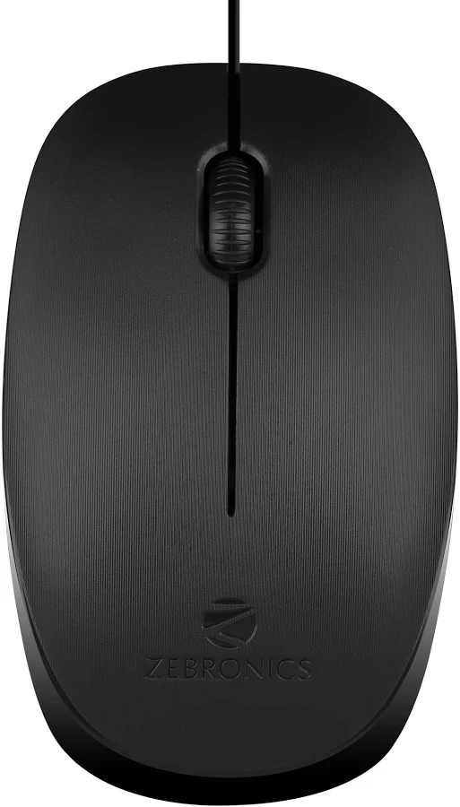
Main Parts of Mouse
1. Left Button
Left Button का उपयोग किसी Item को Select करने, File Open करने और Command Execute करने के लिए किया जाता है। Single Click और Double Click दोनों में इसका उपयोग होता है।
2. Right Button
Right Button का उपयोग Shortcut Menu खोलने के लिए किया जाता है। इसमें Copy, Paste, Rename, Delete, Properties जैसे Options दिखाई देते हैं।
3. Scroll Wheel
Scroll Wheel का उपयोग Page को ऊपर-नीचे Scroll करने के लिए किया जाता है। Webpage, Document और PDF पढ़ते समय यह बहुत useful होता है।
4. Sensor
Sensor Mouse की Movement को Detect करता है। Optical Mouse में Light Sensor और Laser Mouse में Laser Sensor का उपयोग होता है।
5. Cable / Wireless Receiver
Wired Mouse में Cable होती है, जबकि Wireless Mouse Bluetooth या USB Receiver की सहायता से Computer से Connect होता है।
Functions of Mouse
- Screen पर Pointer को Move करना।
- Icons, Files और Folders को Select करना।
- Application या File को Open करना।
- Right Click करके Shortcut Menu खोलना।
- Drag and Drop करना।
- Webpage या Document को Scroll करना।
- Drawing, Designing और Gaming में Control देना।
Common Mouse Actions
1. Click
Mouse Button को एक बार दबाने को Click कहते हैं। इसका उपयोग किसी Item को Select करने के लिए किया जाता है।
2. Double Click
Left Button को जल्दी-जल्दी दो बार दबाने को Double Click कहते हैं। इसका उपयोग File या Application Open करने के लिए किया जाता है।
3. Right Click
Right Button दबाने पर Shortcut Menu खुलता है, जिसमें कई useful Options मिलते हैं।
4. Drag and Drop
किसी Item को Mouse Button दबाकर एक स्थान से दूसरे स्थान पर ले जाने को Drag and Drop कहते हैं।
5. Scrolling
Scroll Wheel की सहायता से Page को ऊपर या नीचे Move करना Scrolling कहलाता है।
Types of Mouse
1. Mechanical Mouse
Mechanical Mouse पुराने समय का Mouse है। इसके नीचे एक Rubber Ball लगी होती थी। जब Mouse को Move किया जाता था, तो Ball घूमती थी और Pointer Screen पर Move होता था। इसमें Dust जमा होने के कारण यह कई बार ठीक से काम नहीं करता था।
Features
- Rubber Ball का उपयोग।
- Regular Cleaning की जरूरत।
- आजकल बहुत कम उपयोग होता है।
2. Optical Mouse
Optical Mouse में Light Sensor का उपयोग होता है। यह Surface पर Light डालकर Movement Detect करता है। आजकल सबसे ज्यादा Optical Mouse का उपयोग होता है।
Features
- Light Sensor Technology।
- Mechanical Mouse से ज्यादा Accurate।
- Cleaning की कम जरूरत।
- Home और Office में Common।
3. Laser Mouse
Laser Mouse में Laser Beam का उपयोग होता है। यह Optical Mouse की तुलना में अधिक Sensitive और Accurate हो सकता है। इसका उपयोग Designing, Gaming और Professional Work में किया जाता है।
Features
- Laser Sensor का उपयोग।
- High Accuracy।
- Different Surfaces पर बेहतर Performance।
- Professional Users के लिए Suitable।
4. Wireless Mouse
Wireless Mouse बिना Cable के काम करता है। यह Bluetooth या USB Receiver की सहायता से Computer से Connect होता है। यह Portable और Clean Desk Setup के लिए अच्छा होता है।
Features
- No Wire।
- Portable और Easy to Use।
- Battery की जरूरत होती है।
- Laptop Users के लिए Useful।
5. Gaming Mouse
Gaming Mouse विशेष रूप से Games खेलने के लिए Design किया जाता है। इसमें High DPI, Fast Response और Extra Buttons होते हैं।
Features
- High DPI Sensitivity।
- Extra Programmable Buttons।
- Fast Response Time।
- Gaming और Fast Control के लिए Suitable।
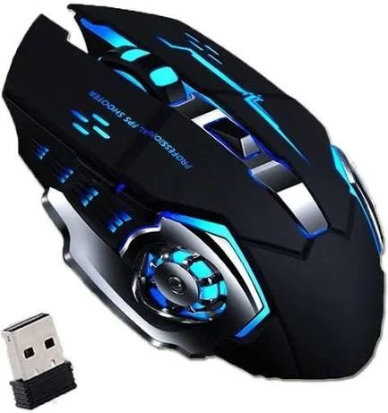
Joystick
Joystick Computer का एक Input Device है जिसका उपयोग किसी Object, Vehicle या Character की Direction और Movement को Control करने के लिए किया जाता है। इसका उपयोग मुख्य रूप से Gaming, Flight Simulator, Military Training, Robotics, CAD/CAM तथा Industrial Control Systems में किया जाता है।
Joystick में एक Handle (Stick) होता है जिसे अलग-अलग Direction में Move करने पर Computer को Control Signals भेजे जाते हैं। कई Joysticks में अतिरिक्त Buttons भी होते हैं जिनसे अलग-अलग Commands दी जा सकती हैं।
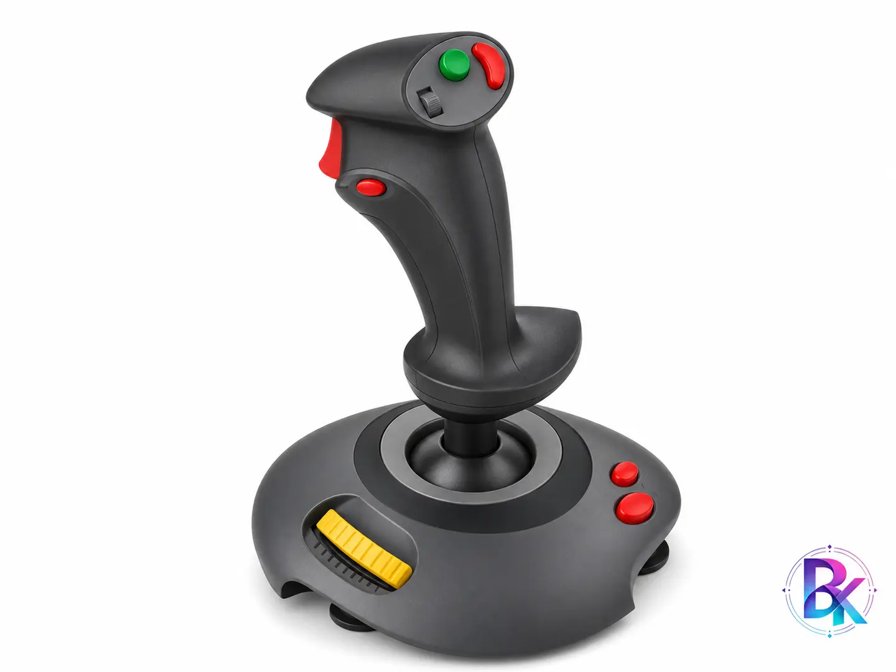
Main Parts of Joystick
- Stick (Handle): Direction Control करने के लिए।
- Base: Joystick को Stable रखता है।
- Buttons: Fire, Jump, Select या अन्य Commands के लिए।
- Sensors: Movement Detect करते हैं।
- USB / Wireless Connection: Computer से Connect करने के लिए।
Functions of Joystick
- Games में Character या Vehicle Control करना।
- Flight Simulator में Aircraft उड़ाना।
- Robot की Direction Control करना।
- Industrial Machines Operate करना।
- 3D Design और Simulation में Object Control करना।
- Training Systems में Realistic Control देना।
Applications of Joystick
- Computer Gaming
- Flight Simulator
- Military Training
- Robotics
- Medical Equipment Control
- Industrial Automation
- CAD/CAM Applications
Real Life Example
Joystick को Bike या Car के Steering/Handle की तरह समझ सकते हैं। जैसे Handle को दाएँ या बाएँ घुमाकर Vehicle की Direction बदली जाती है, वैसे ही Joystick की सहायता से Screen पर Object की Direction और Movement को Control किया जाता है।
Trackball
Trackball एक input device है, जो mouse की तरह cursor को नियंत्रित करने के लिए उपयोग किया जाता है। इसमें ऊपर की ओर एक बड़ी ball लगी होती है, जिसे उँगलियों या अंगूठे से घुमाया जाता है। Ball को घुमाने पर cursor स्क्रीन पर उसी दिशा में चलता है, जबकि Trackball स्वयं अपनी जगह पर स्थिर रहता है।
Trackball का उपयोग उन स्थानों पर अधिक किया जाता है जहाँ desk space कम होती है या high precision की आवश्यकता होती है। इसका उपयोग CAD (Computer-Aided Design), graphic designing, video editing, gaming, medical equipment तथा industrial control systems में किया जाता है। यह mouse की तुलना में कम जगह घेरता है और लंबे समय तक उपयोग करने पर हाथ की गति भी कम करनी पड़ती है, जिससे थकान कम होती है।
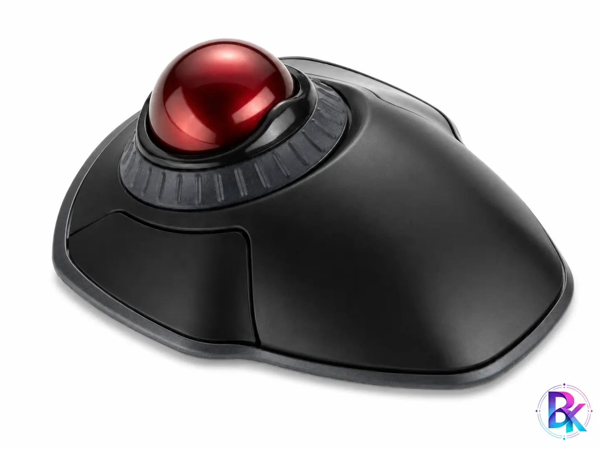
Monitor
Monitor Computer का एक important Output Device है। यह Computer द्वारा Process किए गए Data और Result को Screen पर दिखाता है। Monitor पर हमें Text, Images, Videos, Graphics, Software Interface और Documents दिखाई देते हैं। Monitor को Visual Display Unit (VDU) भी कहा जाता है।
Computer में कोई भी काम जैसे Typing, Browsing, Gaming, Designing, Programming या Video Editing तभी आसानी से किया जा सकता है जब उसका Output हमें Monitor पर दिखाई दे। इसलिए Monitor User और Computer के बीच Visual Communication का मुख्य माध्यम है।
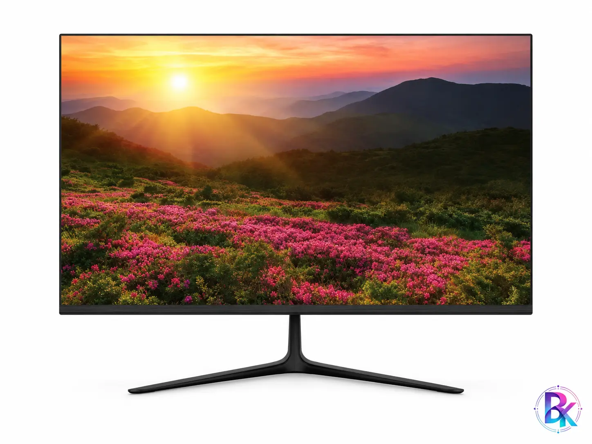
जब CPU या Graphics Card कोई Visual Output तैयार करता है, तो वह Signal Monitor तक भेजता है। Monitor उस Signal को Screen पर Pixels के रूप में Display करता है। बहुत सारे छोटे-छोटे Pixels मिलकर Image या Text बनाते हैं।
Main Functions of Monitor
- Computer Output को Screen पर Display करना।
- Text, Image, Video और Graphics दिखाना।
- User को Software और Operating System का Interface दिखाना।
- Gaming, Designing, Editing और Programming में Visual Output देना।
- Online Classes, Presentations और Multimedia Content दिखाना।
Important Terms Related to Monitor
1. Pixel
Pixel Screen की सबसे छोटी Visual Unit होती है। बहुत सारे Pixels मिलकर Image बनाते हैं। जितने ज्यादा Pixels होंगे, Image उतनी Clear दिखाई देगी।
2. Resolution
Resolution बताता है कि Screen पर कितने Pixels मौजूद हैं। Example: 1920 × 1080 का मतलब है 1920 Pixels Width में और 1080 Pixels Height में।
3. Refresh Rate
Refresh Rate बताता है कि Monitor एक Second में Screen को कितनी बार Refresh करता है। इसे Hz में मापा जाता है। जैसे 60Hz, 75Hz, 144Hz आदि।
4. Screen Size
Monitor की Size को Inches में मापा जाता है। यह Diagonal Length होती है। जैसे 19 inch, 22 inch, 24 inch, 27 inch आदि।
5. Response Time
Response Time बताता है कि Pixel एक Color से दूसरे Color में कितनी जल्दी बदलता है। Gaming Monitor में कम Response Time अच्छा माना जाता है।
Types of Monitor
1. CRT Monitor
CRT का Full Form Cathode Ray Tube है। यह पुराने समय में उपयोग होने वाला Monitor था। इसमें एक बड़ी Glass Tube होती थी जिसमें Electron Beam की सहायता से Screen पर Image बनती थी। CRT Monitor Size में बड़ा, भारी और ज्यादा Power Consume करने वाला होता था।
Features of CRT Monitor
- पुराने समय का Monitor।
- Size बड़ा और Weight ज्यादा।
- Power Consumption अधिक।
- Picture Quality उस समय के अनुसार अच्छी थी।
- आजकल बहुत कम उपयोग होता है।
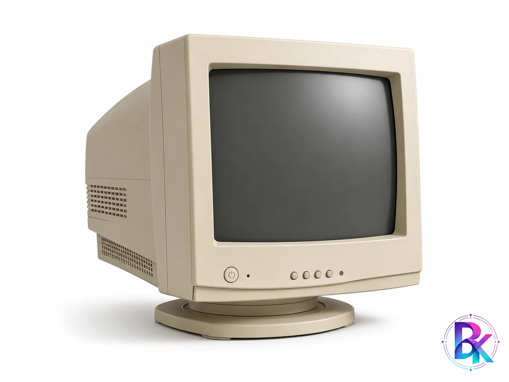
2. LCD Monitor
LCD का Full Form Liquid Crystal Display है। LCD Monitor CRT की तुलना में पतला, हल्का और कम Power Consume करने वाला होता है। इसमें Liquid Crystal Technology का उपयोग किया जाता है। LCD Monitor ने CRT Monitor को धीरे-धीरे Replace कर दिया।
Features of LCD Monitor
- Flat Screen Display।
- CRT से हल्का और पतला।
- कम Electricity Consume करता है।
- Space कम लेता है।
- Office और Home Use के लिए Suitable।
3. LED Monitor
LED का Full Form Light Emitting Diode है। LED Monitor असल में LCD Technology का Advanced Form है जिसमें Backlight के लिए LED Lights का उपयोग किया जाता है। आजकल सबसे ज्यादा LED Monitors का उपयोग होता है क्योंकि ये Bright, Slim और Energy Efficient होते हैं।
Features of LED Monitor
- High Brightness।
- Good Picture Quality।
- Low Power Consumption।
- Long Life।
- Slim और Lightweight Design।
- Home, Office और Education में बहुत Common।
4. OLED Monitor
OLED का Full Form Organic Light Emitting Diode है। OLED Monitor में हर Pixel अपनी Light खुद Produce करता है। इसलिए इसमें Colors बहुत अच्छे, Contrast High और Black Color बहुत Deep दिखाई देता है। OLED Monitor High-End Display Technology मानी जाती है।
Features of OLED Monitor
- Excellent Color Quality।
- Deep Black Display।
- High Contrast Ratio।
- Very Thin Design।
- Professional Designing, Gaming और Video Editing के लिए अच्छा।
- Cost ज्यादा होती है।
5. Touch Screen Monitor
Touch Screen Monitor ऐसा Monitor होता है जिसमें User Screen को Touch करके Input दे सकता है। इसमें Monitor Output Device के साथ-साथ Input Device की तरह भी काम करता है।
Features of Touch Screen Monitor
- Screen Touch करके Command दी जा सकती है।
- Mouse और Keyboard की जरूरत कम हो जाती है।
- ATM, Mobile, Tablet और Kiosk में उपयोग होता है।
- User Friendly Interface प्रदान करता है।
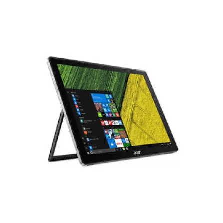
6. Plasma Monitor
Plasma Monitor में छोटे-छोटे Gas Cells का उपयोग किया जाता था जो Light Produce करके Image बनाते थे। Plasma Display बड़े Screen Size और अच्छे Colors के लिए उपयोग होता था, लेकिन Power Consumption अधिक होने के कारण आज इसका उपयोग बहुत कम हो गया है।
Features of Plasma Monitor
- Large Screen Size के लिए उपयोगी।
- Good Color Quality।
- Power Consumption अधिक।
- Heat ज्यादा Produce करता है।
- आजकल बहुत कम उपयोग होता है।
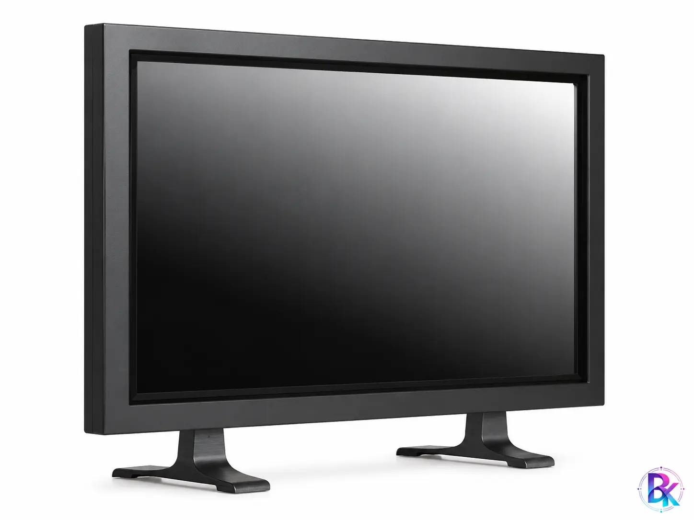
Uses of Monitor
- Office Work
- Online Classes
- Programming
- Gaming
- Graphic Designing
- Video Editing
- Watching Movies
- Presentations
- Banking and Billing Systems
Printer
Printer एक महत्वपूर्ण output device है, जिसका उपयोग Computer में उपलब्ध text, graphics, images तथा अन्य documents को paper पर छापने (Print) के लिए किया जाता है। जब Computer से किसी document या image को print command दी जाती है, तब Printer उस digital information को hard copy के रूप में paper पर स्थानांतरित कर देता है।
Printer text, numbers, charts, graphics, photographs तथा अन्य प्रकार की जानकारी को print कर सकता है। किसी Printer द्वारा प्राप्त print की quality, speed और colour output उसके प्रकार (type of printer) पर निर्भर करती है। कुछ Printers केवल black and white printing करते हैं, जबकि अन्य colour printing भी कर सकते हैं।
आज के समय में Printers का उपयोग schools, colleges, offices, banks, hospitals, industries तथा homes में व्यापक रूप से किया जाता है। इनका उपयोग reports, bills, certificates, photographs, books और अन्य महत्वपूर्ण documents की hard copy तैयार करने के लिए किया जाता है
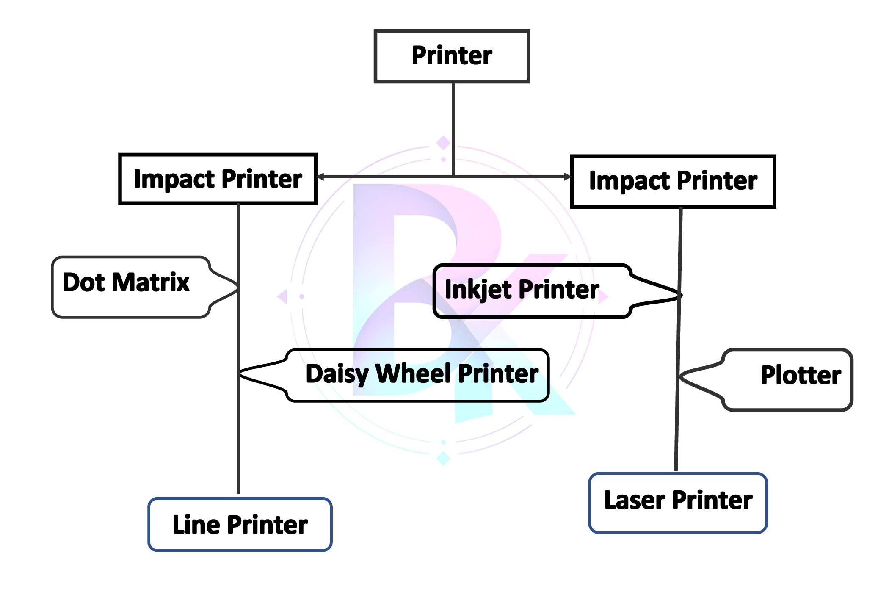
Classification of Printers
Printers मुख्यतः दो भागों में बाँटे जाते हैं:
-
Impact Printers
- Dot Matrix Printer
- Daisy Wheel Printer
- Line Printer
- Durability:-
Impact Printers मजबूत (durable) होते हैं और लंबे समय तक लगातार कार्य कर सकते हैं। - Cost Effective
इनकी maintenance cost कम होती है तथा बड़ी मात्रा में printing करने के लिए किफायती होते हैं। - Multi-part Forms Printing
ये एक साथ कई प्रतियाँ (carbon copies या multi-part forms) प्रिंट कर सकते हैं, इसलिए इनका उपयोग banks, railway reservation तथा billing systems में किया जाता है। - High Noise
Printing के समय ये अधिक noise उत्पन्न करते हैं। - Low Print Quality
इनकी print quality कम होती है, इसलिए high-quality graphics और photographs के लिए उपयुक्त नहीं हैं। - Slow Printing Speed
इनकी printing speed आधुनिक Non-Impact Printers की तुलना में कम होती है। -
Non-Impact Printers
- Inkjet Printer
- Laser Printer
- Quiet Operation:-
ये Printer लगभग बिना noise के कार्य करते हैं, इसलिए offices, schools तथा homes में अधिक उपयोग किए जाते हैं। - High Print Quality
ये high-resolution text, graphics तथा photographs को स्पष्ट और आकर्षक रूप में print कर सकते हैं। - Faster Printing
विशेष रूप से Laser Printers बहुत तेज़ printing speed प्रदान करते हैं, जिससे कम समय में अधिक documents प्रिंट किए जा सकते हैं। - High Cost
इनकी purchase cost तथा ink cartridges या toner की लागत Impact Printers की तुलना में अधिक होती है। - Sensitive to Paper Quality
कुछ Non-Impact Printers केवल विशेष प्रकार के paper पर ही बेहतर printing करते हैं। गलत paper quality होने पर print quality प्रभावित हो सकती है।
Impact Printer वह Printer होता है, जो ink ribbon पर सीधे दबाव (Impact) डालकर paper पर text या graphics को print करता है। इसका कार्य करने का तरीका typewriter के समान होता है। Printing के समय Printer का print head Ribbon पर प्रहार करता है, जिससे अक्षर या चित्र paper पर छप जाते हैं। यह Printer कार्य करते समय अधिक noise उत्पन्न करता है।
Types of Impact Printers
-
Advantages of Impact Printers
Disadvantages of Impact Printers
Non-Impact Printer वह Printer होता है, जो paper पर print करने के लिए किसी ink ribbon पर प्रहार नहीं करता। यह Laser, Inkjet, Electrostatic तथा अन्य आधुनिक printing technologies का उपयोग करता है। ये Printer शांत (quiet) होते हैं तथा उच्च गुणवत्ता (high-quality output) प्रदान करते हैं।
Types of Non-Impact Printers
-
Advantages of Non-Impact Printers
Disadvantages of Non-Impact Printers
Impact Printers
1. Dot Matrix Printer
Dot Matrix Printer एक Impact Printer है, जो print head में लगे छोटे-छोटे pins की सहायता से ink ribbon पर प्रहार करके paper पर text, numbers, graphics तथा symbols को प्रिंट करता है। इस Printer में प्रत्येक character और image अनेक छोटे-छोटे dots (बिंदुओं) से मिलकर बनते हैं, इसलिए इसे Dot Matrix Printer कहा जाता है। यह Impact Printing Technology पर आधारित होता है, जिसके कारण printing के समय अधिक noise उत्पन्न होती है। इस Printer की सबसे बड़ी विशेषता यह है कि यह multi-part forms (carbon copies) को एक साथ प्रिंट कर सकता है। पहले इसका उपयोग banks, railway reservation, billing systems, government offices तथा business organizations में बड़े पैमाने पर किया जाता था। हालांकि वर्तमान समय में Inkjet और Laser Printers के आने से इसका उपयोग कम हो गया है, फिर भी जहाँ कम लागत में लगातार printing और multi-copy documents की आवश्यकता होती है, वहाँ आज भी Dot Matrix Printer का उपयोग किया जाता है। इसकी maintenance cost कम होती है तथा यह लंबे समय तक लगातार कार्य करने में सक्षम होता है।
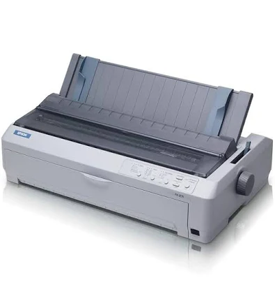
2. Daisy Wheel Printer
Daisy Wheel Printer एक Impact Printer है, जो typewriter की तरह कार्य करता है। इसमें एक गोलाकार wheel लगा होता है, जिसे Daisy Wheel कहा जाता है। इस wheel की प्रत्येक पंखुड़ी (Petal) पर एक character, number या symbol बना होता है। जब किसी character को प्रिंट करना होता है, तो wheel घूमकर उस character को सही स्थान पर लाता है और एक hammer उसकी सहायता से ink ribbon पर प्रहार करता है। इसके बाद ink ribbon से स्याही paper पर स्थानांतरित हो जाती है और character प्रिंट हो जाता है।
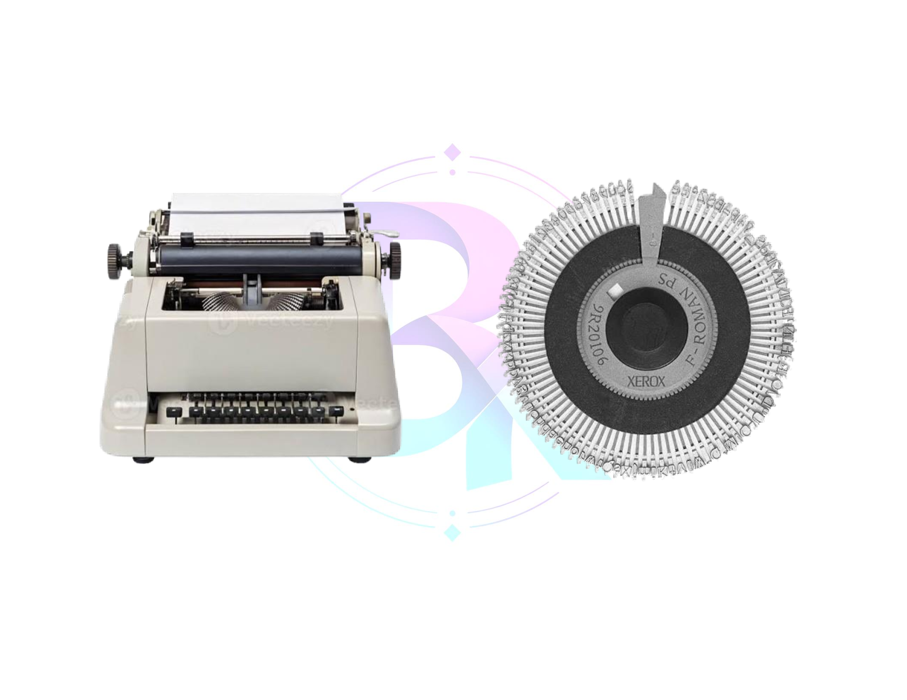
3. Line Printer
Line Printer एक Impact Printer है, जो एक समय में एक-एक character की बजाय पूरी एक line को एक साथ
print करता
है। इसी कारण इसे Line Printer कहा जाता है। यह Printer बहुत अधिक printing speed प्रदान करता है और
कम समय
में हजारों lines प्रिंट करने की क्षमता रखता है। यह ink ribbon और hammer mechanism की सहायता से
paper पर
प्रिंट करता है, इसलिए printing के समय अधिक noise उत्पन्न होती है।
Line Printer का उपयोग मुख्य रूप से उन स्थानों पर किया जाता है, जहाँ बड़ी मात्रा में documents को
तेज़ी से
प्रिंट करना होता है। इसका उपयोग banks, government offices, data centers, railway reservation
systems,
industries तथा बड़े business organizations में reports, bills, invoices, payroll और अन्य bulk
documents
की printing के लिए किया जाता था। यह Printer लगातार लंबे समय तक बिना रुके कार्य कर सकता है, इसलिए
इसे
high-volume printing के लिए उपयुक्त माना जाता है।
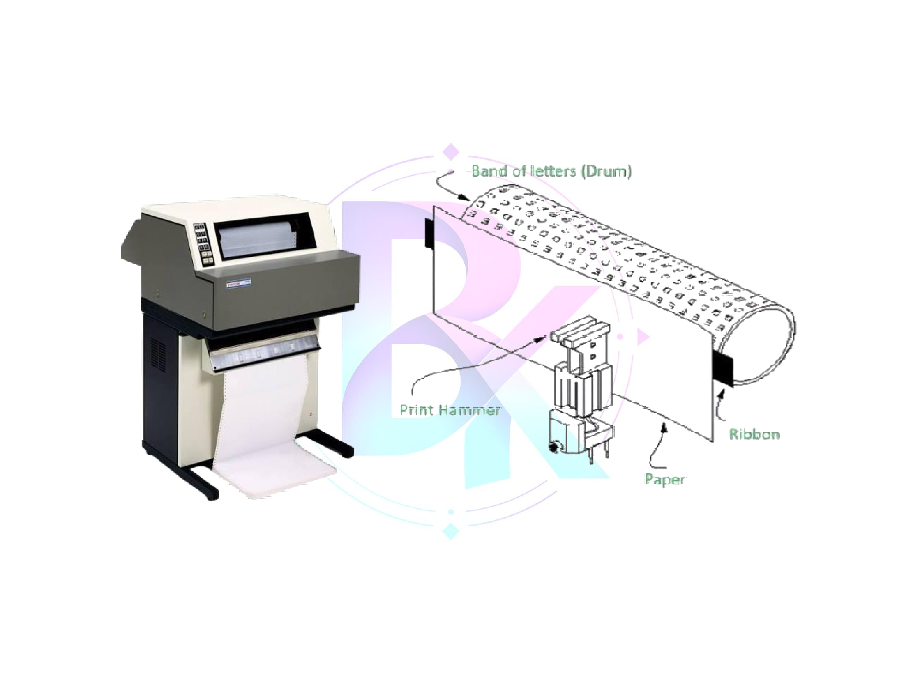
Non-Impact Printers
1. Inkjet Printer
Inkjet Printer एक Non-Impact Printer है, जो paper पर छोटे-छोटे ink drops छिड़ककर text, images,
graphics और
photos को प्रिंट करता है। इसमें print head में बहुत छोटे nozzles लगे होते हैं, जिनसे liquid ink
की
छोटी-छोटी बूंदें निकलकर paper पर गिरती हैं और स्पष्ट print output तैयार करती हैं। यह Printer
paper पर
किसी प्रकार का physical impact नहीं डालता, इसलिए यह कम noise करता है।
Inkjet Printer की print quality अच्छी होती है और यह colour printing तथा photo printing के लिए
बहुत उपयोगी
माना जाता है। इसका उपयोग homes, schools, offices, photo studios और छोटे businesses में किया जाता
है। यह
Printer सामान्यतः सस्ता होता है, लेकिन इसकी ink cartridges बार-बार बदलनी पड़ सकती हैं, इसलिए
लंबे समय में
इसकी running cost अधिक हो सकती है। फिर भी कम मात्रा में अच्छी quality printing के लिए Inkjet
Printer एक
अच्छा विकल्प है।

2. Laser Printer
Laser Printer एक Non-Impact Printer है, जो laser beam और toner powder की सहायता से text, graphics तथा images को paper पर प्रिंट करता है। इसमें laser technology का उपयोग किया जाता है, जिससे printing तेज़, स्पष्ट और उच्च गुणवत्ता (high-quality output) वाली होती है। यह Printer paper पर किसी प्रकार का physical impact नहीं डालता, इसलिए यह बहुत कम noise उत्पन्न करता है।
Laser Printer में सबसे पहले laser beam एक photosensitive drum पर image बनाती है। इसके बाद toner powder उस drum पर चिपक जाता है और फिर heat तथा pressure की सहायता से paper पर स्थायी रूप से स्थानांतरित हो जाता है। इस प्रक्रिया के कारण print साफ़, तेज़ और लंबे समय तक टिकाऊ रहता है।
Laser Printer का उपयोग offices, banks, schools, colleges, government departments तथा बड़े business organizations में अधिक किया जाता है, जहाँ प्रतिदिन बड़ी संख्या में documents प्रिंट करने की आवश्यकता होती है। इसकी printing speed बहुत अधिक होती है और यह कम समय में सैकड़ों pages प्रिंट कर सकता है। हालांकि Laser Printer की प्रारंभिक cost तथा toner cartridge की कीमत Inkjet Printer की तुलना में अधिक होती है, लेकिन अधिक printing volume होने पर इसकी cost per page कम पड़ती है। इसलिए तेज़, स्पष्ट और बड़ी मात्रा में printing के लिए Laser Printer सबसे उपयुक्त माना जाता है।
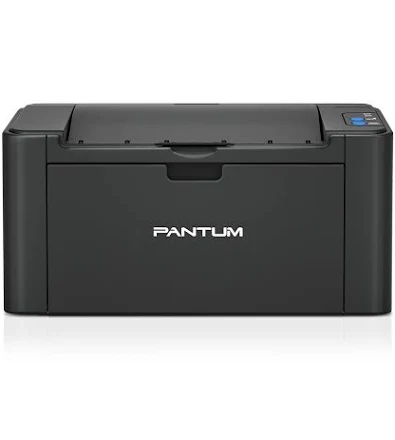
3. Thermal Printer
Thermal Printer एक Non-Impact Printer है, जो heat की सहायता से paper पर text और images प्रिंट करता है। इसमें सामान्य ink या toner का उपयोग नहीं होता, बल्कि विशेष thermal paper का उपयोग किया जाता है। यह Printer तेज़, शांत (low noise) और कम maintenance वाला होता है। इसका उपयोग ATM receipts, POS billing machines, barcode printing, railway tickets तथा shopping malls में receipts और bills प्रिंट करने के लिए व्यापक रूप से किया जाता है।
4. Plotter
Plotter एक विशेष प्रकार का output device है, जिसका उपयोग बड़े आकार (large-size) के drawings, maps, engineering designs, architectural plans तथा technical diagrams को प्रिंट करने के लिए किया जाता है। सामान्य Printer की तुलना में Plotter अधिक accurate और high-quality graphics तैयार करता है। यह pens, inkjet technology या अन्य आधुनिक printing techniques की सहायता से कार्य करता है। Plotter का उपयोग मुख्य रूप से engineering, architecture, construction, CAD (Computer-Aided Design) तथा graphic designing के क्षेत्र में किया जाता है, जहाँ बड़े और सटीक designs की आवश्यकता होती है।
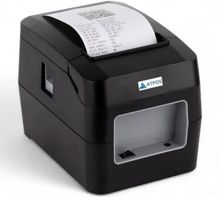
Others Printer
5. Photo Printer
Photo Printer विशेष रूप से High Resolution Color Photos Print करने के लिए बनाया जाता है। Photography Studios तथा Graphic Designers इसका उपयोग करते हैं।
6. 3D Printer
3D Printer सामान्य Paper पर Print नहीं करता बल्कि Plastic, Resin या Metal की Layers बनाकर वास्तविक Three-Dimensional Object तैयार करता है। Engineering, Medical Science, Automobile तथा Aerospace Industry में इसका उपयोग तेजी से बढ़ रहा है।
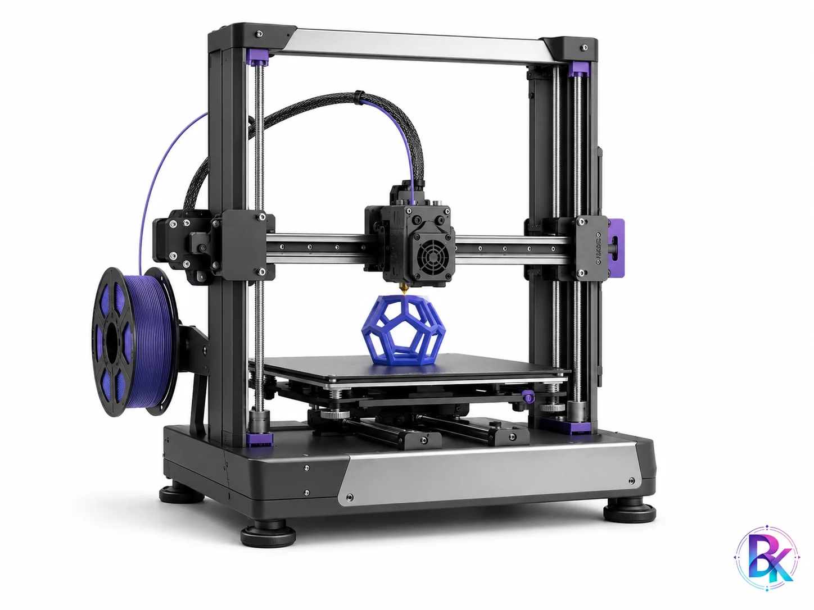
Difference between Impact and Non-Impact Printers
| Impact Printer | Non-Impact Printer |
|---|---|
| Impact Printer में print head या pins सीधे ink ribbon पर प्रहार करके paper पर printing करते हैं। | Non-Impact Printer बिना किसी प्रहार (impact) के paper पर printing करता है। |
| इसमें hammer, pins या character set की सहायता से printing की जाती है। | इसमें ink, toner, laser या अन्य आधुनिक printing technology का उपयोग किया जाता है। |
| यह electromechanical mechanism पर कार्य करता है। | इसमें electromechanical striking mechanism का उपयोग नहीं होता। |
| इसकी printing speed सामान्यतः कम होती है, लेकिन bulk printing के लिए उपयुक्त होती है। | इसकी printing speed अधिक होती है, विशेषकर Laser Printer में |
| Printing के समय अधिक noise उत्पन्न होती है। | यह लगभग silent तरीके से कार्य करता है। |
| इसकी print quality सामान्य होती है और graphics या photos के लिए उपयुक्त नहीं है। | इसकी print quality बहुत अच्छी होती है तथा photos और high-quality graphics आसानी से प्रिंट किए जा सकते हैं। |
| इसकी cost सामान्यतः कम होती है। | इसकी cost Impact Printer की तुलना में अधिक होती है। |
| Examples: Dot Matrix Printer, Daisy Wheel Printer, Line Printer | Examples: Inkjet Printer, Laser Printer, Photo Printer, Thermal Printer |
Scanner
Scanner एक महत्वपूर्ण input device है, जिसका उपयोग documents, photographs, magazines, posters तथा images को digital form में बदलने के लिए किया जाता है। यह किसी paper document या image को scan करके उसकी digital copy तैयार करता है, जिसे Computer में store, edit, share या archive किया जा सकता है।
Scanner प्रकाश (light) की सहायता से document को पढ़ता है और उसे digital image में परिवर्तित कर देता है। इसके बाद इस digital copy को विभिन्न software applications की सहायता से आसानी से edit या modify किया जा सकता है। उदाहरण के लिए, Adobe Photoshop जैसे image editing software में scanner की सहायता से सीधे images को import करके उनमें आवश्यक परिवर्तन किए जा सकते हैं।
अधिकांश Scanners USB cable के माध्यम से Computer से जुड़े होते हैं, जबकि आधुनिक Scanners में Bluetooth तथा Wi-Fi (Wireless) जैसी सुविधाएँ भी उपलब्ध होती हैं, जिससे बिना किसी cable के भी documents को scan किया जा सकता है।
आज के समय में Scanner का उपयोग schools, colleges, offices, banks, hospitals तथा business organizations में important documents, photographs, identity cards, certificates और अन्य records की digital copy तैयार करने के लिए व्यापक रूप से किया जाता है।
How to work
Step.1: Document Placement
सबसे पहले document, photo या image को Scanner की
glass plate पर रखा जाता है। इसके बाद Scanner का cover बंद किया जाता है ताकि scanning साफ़ हो
सके।
Step.2: Light Source
Scanner के अंदर लगी light source document पर प्रकाश डालती
है। यह प्रकाश document के अलग-अलग भागों से reflect होकर वापस Scanner के अंदर जाता है।
Step.3: Image Reading
Scanner में मौजूद sensor reflected light को पढ़ता है। यह
sensor document के text, image, colour और brightness को पहचानता है।
Step.4: Conversion into Digital Signal
Sensor द्वारा पढ़ी गई जानकारी को
digital signal में बदला जाता है। यह data Computer के समझने योग्य form में convert हो जाता है।
Step.5: Data Transfer to Computer
Converted digital data को USB cable, Wi-Fi
या Bluetooth के माध्यम से Computer में भेजा जाता है
Step.6: Software Processing
Computer में installed scanning software उस data
को process करता है और उसे digital image या PDF file के रूप में तैयार करता है।
Step.7: Software Processing
अंत में scanned file को Computer में save किया जा
सकता है। आवश्यकता पड़ने पर उसे edit, print, email या share भी किया जा सकता है।
Main Components
- Scanner Glass
- Light Source (LED/Lamp)
- CCD/CIS Sensor
- Mirror & Lens System
- Motor
- Controller Board
- USB/Wi-Fi Interface
Types of Scanner
1. Flatbed Scanner
Flatbed Scanner सबसे अधिक उपयोग किया जाने वाला Scanner है। इसमें एक समतल glass surface (flat glass bed) होती है, जिस पर document, photograph, book page, certificate या अन्य paper रखकर scan किया जाता है। जब scan प्रक्रिया शुरू होती है, तो Scanner के अंदर लगा light source और sensor glass bed के नीचे आगे-पीछे चलता है और पूरे document को पढ़कर उसकी digital copy तैयार करता है।
Flatbed Scanner उच्च resolution और उत्कृष्ट image quality प्रदान करता है। यह colour तथा black & white documents दोनों को आसानी से scan कर सकता है। इस Scanner का उपयोग homes, schools, colleges, offices, banks तथा business organizations में important documents, photographs, certificates, books और अन्य records को digital format में सुरक्षित रखने के लिए किया जाता है।
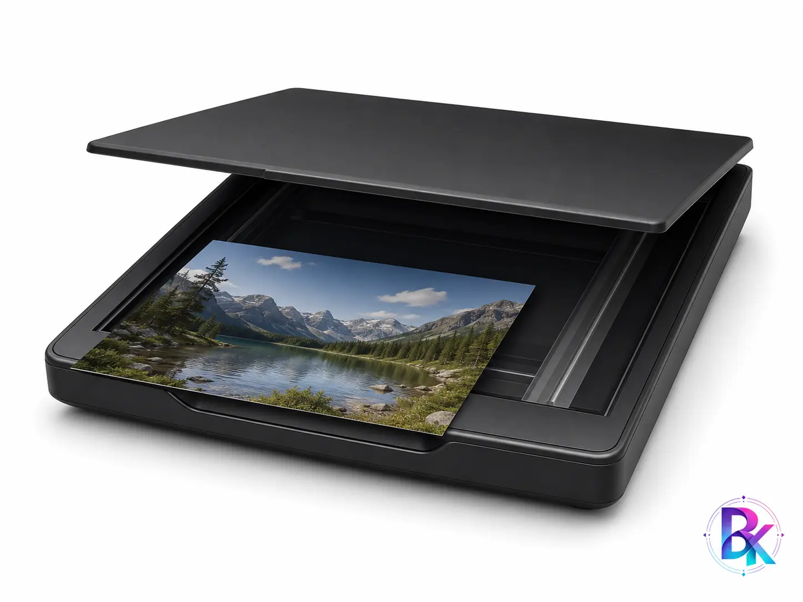
2. Sheet-fed Scanner
Sheet-fed Scanner एक ऐसा Scanner है, जिसमें documents को Automatic Document Feeder (ADF) के माध्यम से अंदर खींचकर scan किया जाता है। इसमें paper को glass surface पर रखने की आवश्यकता नहीं होती। यह एक साथ कई pages को तेज़ी से scan कर सकता है, इसलिए इसका उपयोग offices, banks और business organizations में bulk document scanning के लिए किया जाता है।
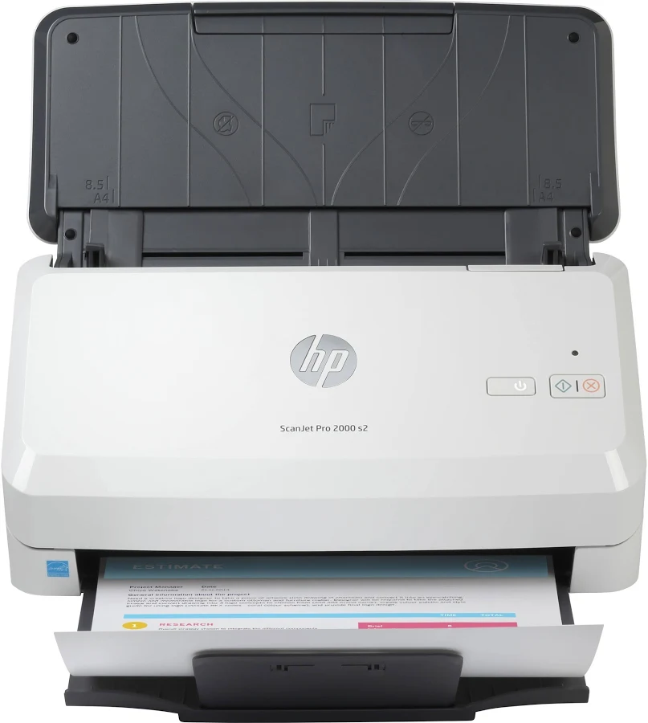
3. Handheld Scanner
Handheld Scanner एक छोटा और portable Scanner है, जिसे हाथ से चलाकर documents, books, photographs तथा barcodes को scan किया जाता है। इसे scan करने के लिए Scanner को document के ऊपर धीरे-धीरे चलाना पड़ता है। इसका उपयोग libraries, offices, warehouses तथा retail stores में किया जाता है। यह आकार में छोटा, उपयोग में आसान और यात्रा (travel) के लिए सुविधाजनक होता है।
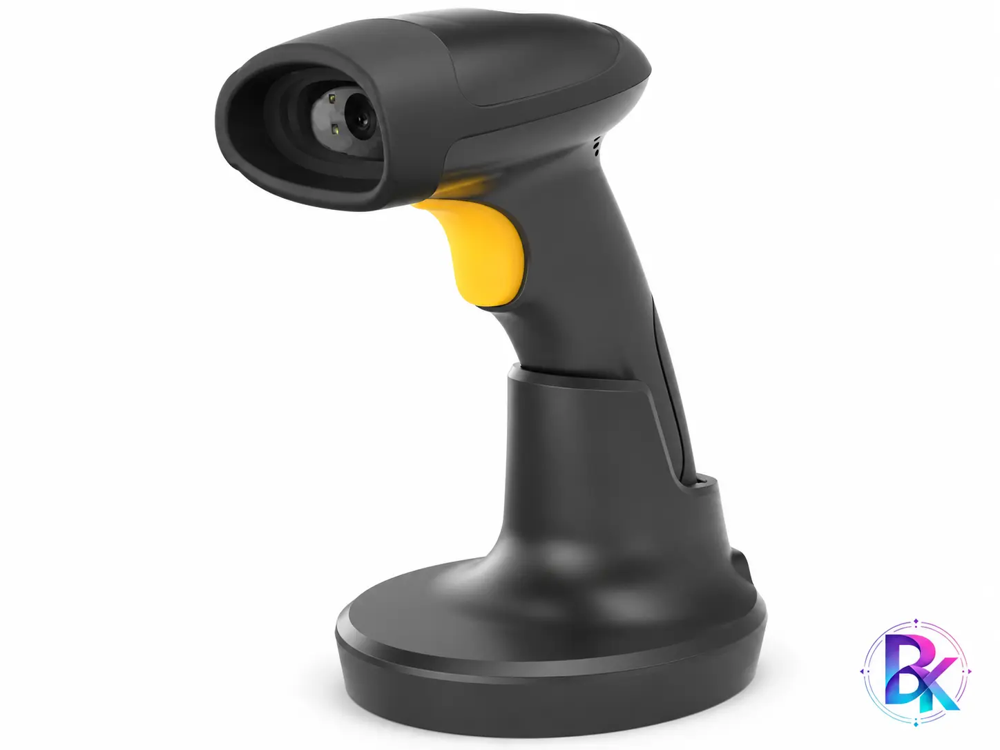
4.Drum Scanner
Drum Scanner एक high-resolution Scanner है, जिसका उपयोग professional image scanning के लिए किया जाता है। इसमें document या photo को एक घूमने वाले drum पर लगाया जाता है और photomultiplier tube (PMT) की सहायता से scan किया जाता है। यह अत्यधिक accurate और high-quality images प्रदान करता है। इसका उपयोग publishing, printing industry, graphic designing तथा photo studios में किया जाता है
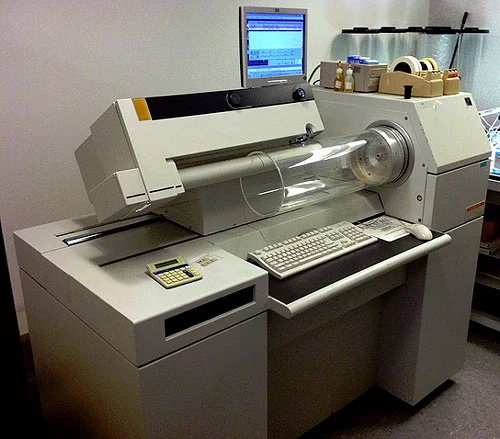
5. Film Scanner
Film Scanner एक विशेष प्रकार का Scanner है, जिसका उपयोग photographic films, negatives और slides को digital images में बदलने के लिए किया जाता है। यह high resolution और उत्कृष्ट image quality प्रदान करता है, जिससे पुरानी films और photographs को सुरक्षित रूप से digital format में संग्रहित किया जा सकता है। इसका उपयोग photo studios, photography तथा film restoration के क्षेत्र में किया जाता है।
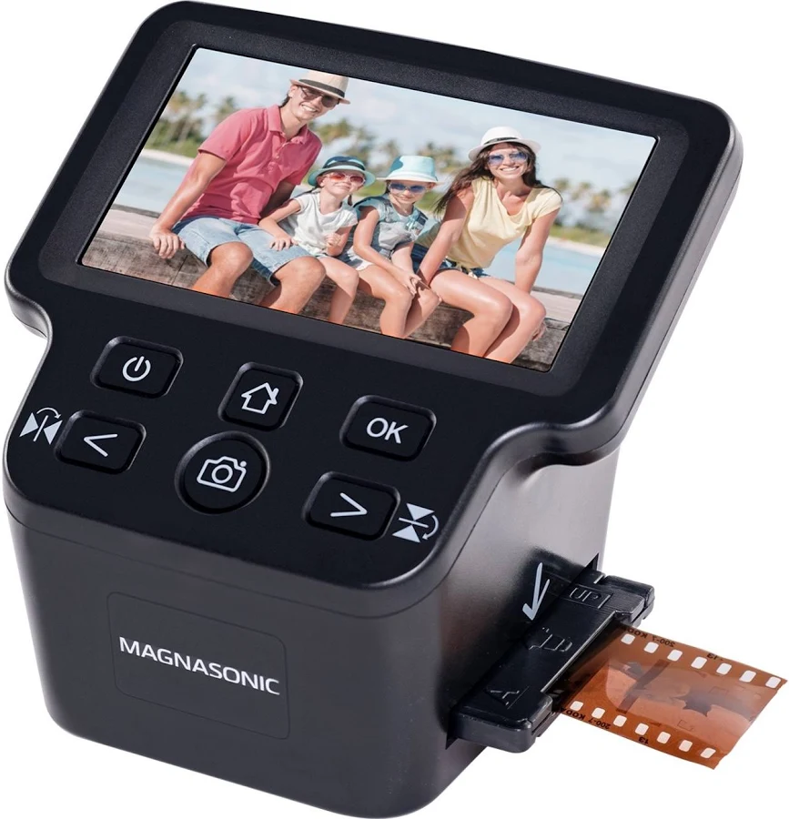
6. Portable / Mobile Scanner
Portable / Mobile Scanner एक छोटा, हल्का और portable Scanner है, जिसे आसानी से कहीं भी ले जाया जा सकता है। इसका उपयोग documents, receipts, business cards तथा photographs को scan करने के लिए किया जाता है। यह सामान्यतः USB, Bluetooth या Wi-Fi के माध्यम से Computer या Smartphone से जुड़ता है। इसका उपयोग business professionals, students तथा field workers द्वारा यात्रा के दौरान quick scanning के लिए किया जाता है।
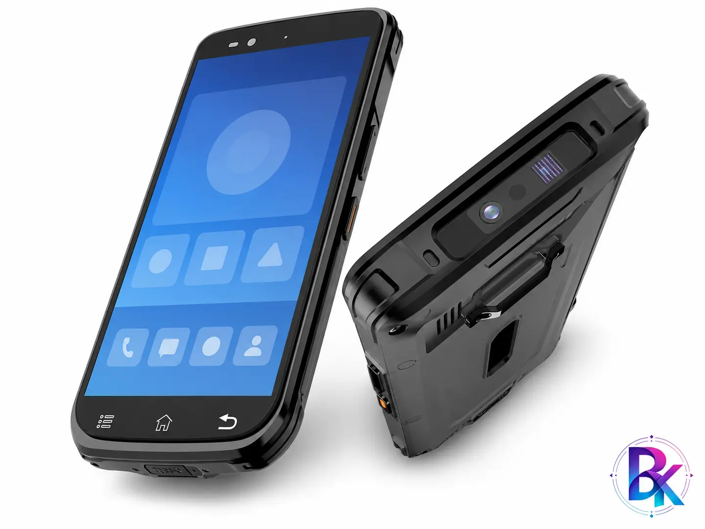
7. 3D Scanner
3D Scanner एक उन्नत Scanner है, जो किसी object के shape, size और surface details को three-dimensional (3D) रूप में scan करता है। यह laser या light sensors की सहायता से 3D model तैयार करता है। इसका उपयोग engineering, architecture, medical science, manufacturing, product design तथा 3D printing में किया जाता है। यह अत्यधिक accurate और high-quality digital models तैयार करने में सक्षम होता है।
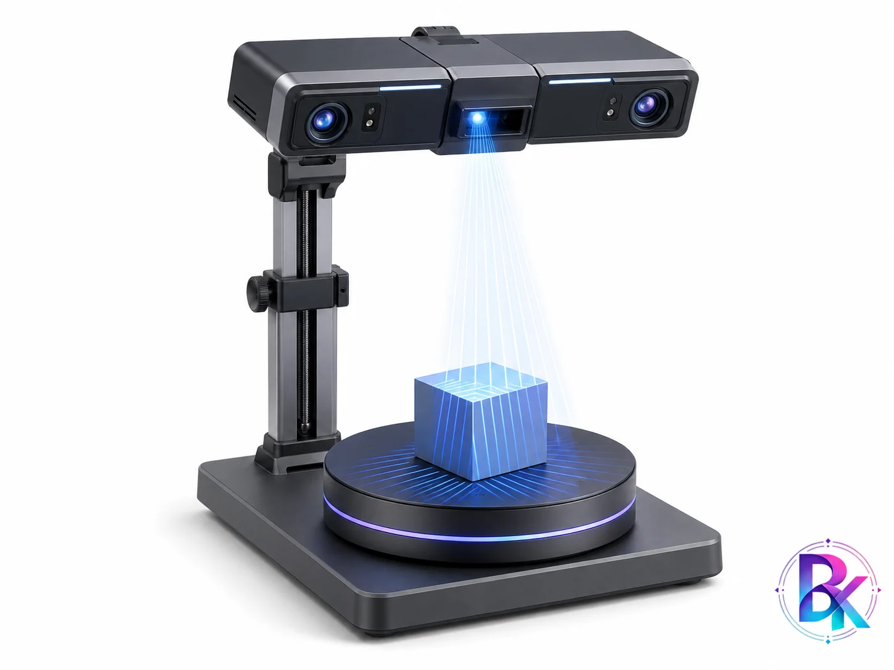
Real Life Example
Advantages
- Paper Documents का Digital Backup.
- OCR द्वारा Editable Text.
- Paperless Office को बढ़ावा.
- Photos और Certificates सुरक्षित रखना.
- Online Document Submission में उपयोगी.
- Time और Storage Space की बचत.
Disadvantages
- High Resolution Files अधिक Storage लेती हैं.
- Low Quality Scanner में Image Quality कम होती है.
- Hardware Maintenance की आवश्यकता.
- Professional Scanners महंगे होते हैं.
- OCR हमेशा 100% Accurate नहीं होता.
Video Card
Video Card जिसे Graphics Card भी कहा जाता है, Computer का एक महत्वपूर्ण hardware component है, जो visual information को process और render करने का कार्य करता है। यह CPU के साथ मिलकर स्क्रीन पर images, graphics, videos और animations को स्पष्ट एवं आकर्षक रूप में प्रदर्शित करता है।
Video Card का मुख्य कार्य स्क्रीन पर दिखाई देने वाले pixels को नियंत्रित और process करना होता है। स्क्रीन पर दिखाई देने वाला प्रत्येक image, text, icon या video लाखों छोटे-छोटे pixels से मिलकर बना होता है। Graphics Card इन pixels को इस प्रकार व्यवस्थित करता है कि स्क्रीन पर साफ़, रंगीन और उच्च गुणवत्ता वाली display दिखाई दे।
साधारण text दिखाने से लेकर high graphics games, 3D animations, video editing तथा graphic designing जैसे कार्यों में Video Card की महत्वपूर्ण भूमिका होती है। जितना अधिक powerful Graphics Card होगा, उतनी ही बेहतर image quality, high resolution, smooth screen transition और अधिक frames per second (FPS) प्राप्त होंगे। इससे games और videos बिना रुकावट (Lag) के अधिक वास्तविक (Realistic) दिखाई देते हैं।
आज के समय में Video Card का उपयोग gaming, multimedia, animation, engineering design, video editing, Artificial Intelligence (AI) तथा Machine Learning जैसे क्षेत्रों में भी व्यापक रूप से किया जा रहा है।
- Graphics Processing Unit (GPU)
- VRAM (Video Random Access Memory)
- Memory Interface (Memory Bandwidth)
- Clock Speed
- Ports
GPU (Graphics Processing Unit), Video Card का सबसे महत्वपूर्ण component होता है। इसका मुख्य कार्य स्क्रीन पर दिखाई देने वाले graphics, images, videos और 3D visuals को process और render करना होता है। Pixels की संख्या, उनका आकार, rendering तथा shader execution जैसे सभी कार्य GPU द्वारा किए जाते हैं। लगातार अधिक processing करने के कारण GPU गर्म हो जाता है, इसलिए इसे ठंडा रखने के लिए इसके ऊपर cooling fan या heat sink लगाया जाता है।
VRAM (Video Memory) वह memory होती है, जिसमें सभी graphical data और visual elements अस्थायी रूप से store किए जाते हैं। जब games, videos या animations चलाए जाते हैं, तब GPU इसी memory से बहुत तेज़ी से data प्राप्त करता है। VRAM, सामान्य RAM या Hard Disk की तुलना में अधिक तेज़ होती है, जिससे high-quality graphics बिना किसी रुकावट के प्रदर्शित होते हैं।
Memory Interface वह मार्ग (path) है, जो GPU और VRAM को आपस में जोड़ता है। इसके माध्यम से graphical data एक स्थान से दूसरे स्थान तक पहुँचता है। यदि memory bandwidth अधिक होती है, तो अधिक मात्रा में data तेज़ी से transfer होता है। इससे high-resolution textures, 3D graphics तथा जटिल graphical applications बेहतर तरीके से चल पाते हैं। Memory Bandwidth को सामान्यतः GB/s (Gigabytes per Second) में मापा जाता है।
Clock Speed से तात्पर्य GPU की कार्य करने की गति से है। यह बताती है कि GPU एक निश्चित समय में कितनी तेजी से data को process कर सकता है। जितनी अधिक Clock Speed होगी, उतनी ही तेज़ी से graphics processing होगी और Video Card का performance भी बेहतर होगा। Clock Speed को सामान्यतः MHz (Megahertz) या GHz (Gigahertz) में मापा जाता है।
Ports वे connectors होते हैं, जिनकी सहायता से Video Card को monitor, TV, projector या अन्य display devices से जोड़ा जाता है। Video Card द्वारा तैयार किए गए graphics और videos इन्हीं ports के माध्यम से output device तक पहुँचते हैं। वर्तमान समय में HDMI, DisplayPort, DVI तथा VGA जैसे विभिन्न प्रकार के ports का उपयोग किया जाता है। इनमें HDMI और DisplayPort सबसे अधिक प्रचलित हैं, क्योंकि ये high-resolution video और digital audio दोनों को एक साथ transfer कर सकते हैं।
Sound Card
Sound Card कंप्यूटर का एक महत्वपूर्ण hardware component है, जो sound को produce (उत्पन्न) और record (रिकॉर्ड) करने का कार्य करता है। इसकी सहायता से user अपने कंप्यूटर से analogue microphone, speakers और headphones को connect कर सकता है। आज के अधिकांश आधुनिक Computers में Sound Card अलग से नहीं लगाया जाता, बल्कि यह motherboard में ही integrated होता है। क्योंकि Computer एक digital device है, जबकि आवाज़ (Sound) स्वाभाविक रूप से analogue signal होती है, इसलिए Computer में sound को सही रूप से बनाने और रिकॉर्ड करने के लिए Sound Card की आवश्यकता होती है। Sound Card analogue signal को digital signal में तथा digital signal को analogue signal में बदलने का कार्य करता है, जिससे Computer आवाज़ को आसानी से play और record कर सकता है। मानव कान (Human Ear) आवाज़ में होने वाले बहुत छोटे-छोटे बदलावों को भी महसूस कर सकता है, इसलिए अच्छी audio quality प्रदान करने में Sound Card की महत्वपूर्ण भूमिका होती है।
How Does a Sound Card Work?
Sound Card विशेष chips का उपयोग करता है, जिससे CPU पर कार्य का भार (Load) कम हो जाता है। यह मुख्य रूप से ADC (Analog to Digital Converter) और DAC (Digital to Analog Converter) की सहायता से कार्य करता है।
जब microphone से आवाज़ Computer में जाती है, तो ADC उस analogue signal को digital signal में बदल देता है, ताकि Computer उसे समझ सके, process कर सके और store कर सके। इसके विपरीत, जब Computer किसी audio file को play करता है, तो DAC उस digital signal को दोबारा analogue signal में बदल देता है, जिससे speakers या headphones के माध्यम से आवाज़ सुनाई देती है।
पहले के समय में Sound Card एक अलग expansion card के रूप में लगाया जाता था, जो ISA (Industry Standard Architecture) या PCI (Peripheral Component Interconnect) slot में लगाया जाता था। वर्तमान समय में अधिकतर Sound Cards PCI Express (PCIe) का उपयोग करते हैं। जैसे-जैसे audio recording और audio playback का उपयोग बढ़ा तथा hardware components की लागत कम हुई, वैसे-वैसे basic Sound Card की सुविधाएँ सीधे motherboard में integrated कर दी गईं।
आज भी बेहतर audio quality के लिए external Sound Cards, जिन्हें Audio Interface भी कहा जाता है, उपयोग किए जाते हैं। ये सामान्यतः USB के माध्यम से Computer से connect होते हैं। Professional sound recording, music production तथा podcasting जैसे कार्यों के लिए कई audio inputs और audio outputs वाले Audio Interface का उपयोग किया जाता है।
आज के अधिकांश smartphones में headphones और microphone के लिए एक ही 3.5 mm audio jack दिया जाता है, जबकि उच्च गुणवत्ता वाली audio recording और sound production के लिए उन्नत (sophisticated) Sound Cards या Audio Interfaces का उपयोग किया जाता है।
Speakers
Speakers Computer के महत्वपूर्ण output devices हैं, जिनका उपयोग sound सुनने के लिए किया जाता है। ये एक प्रकार के transducers होते हैं, जो electrical signals को sound waves में परिवर्तित करके आवाज़ उत्पन्न करते हैं। Computer में music, videos, games, voice recordings तथा अन्य audio files को सुनने के लिए Speakers का उपयोग किया जाता है। जब Computer किसी audio file को play करता है, तो Sound Card द्वारा तैयार किए गए electrical signals को Speakers प्राप्त करते हैं। इसके बाद Speakers इन electrical signals को sound waves में बदल देते हैं, जिससे उपयोगकर्ता स्पष्ट रूप से आवाज़ सुन सकता है। Speakers सामान्यतः analog audio signals पर कार्य करते हैं और उच्च गुणवत्ता (high-quality audio) की ध्वनि प्रदान करते हैं। आज के समय में Speakers का उपयोग केवल Computer में ही नहीं, बल्कि Laptop, Television, Smartphone, Home Theatre तथा अन्य multimedia devices में भी व्यापक रूप से किया जाता है। आधुनिक Speakers बेहतर sound quality, bass और surround sound जैसी सुविधाएँ भी प्रदान करते हैं, जिससे audio experience अधिक प्रभावशाली और वास्तविक बन जाता है।
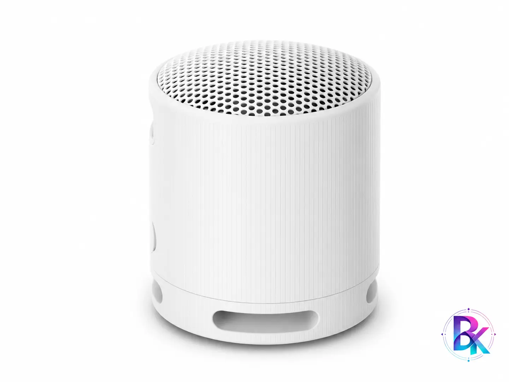
Working of Speakers
Speakers का मुख्य कार्य electrical energy को sound energy में बदलना होता है। जब Computer या किसी अन्य audio device से audio signal भेजा जाता है, तो वह सबसे पहले Speaker के अंदर मौजूद voice coil तक पहुँचता है।
Step 1: Electrical Signal Reception
Computer या Sound Card से आने वाला electrical signal Speaker की voice coil तक पहुँचता है। यह signal आवाज़ से संबंधित सभी जानकारी अपने साथ लेकर आता है।
Step 2: Magnetic Field Generation
जब electric current voice coil से होकर गुजरता है, तब उसके चारों ओर एक magnetic field उत्पन्न होता है। यह magnetic field, Speaker के अंदर लगे स्थायी magnet के magnetic field के साथ क्रिया (Interaction) करता है।
Step 3: Cone Movement
Magnetic force के कारण voice coil और उससे जुड़ा हुआ speaker cone (diaphragm) आगे-पीछे (Back and Forth) गति करने लगता है। यह गति audio signal के अनुसार लगातार बदलती रहती है।
Step 4: Air Compression and Expansion
जब speaker cone आगे-पीछे चलता है, तो वह अपने आसपास की हवा को compress और expand करता है। इससे हवा में pressure waves उत्पन्न होती हैं।
Step 5: Sound Production
हवा में उत्पन्न हुई ये pressure waves हमारे कानों तक पहुँचती हैं और हमें sound के रूप में सुनाई देती हैं। यही sound Speaker का output होता है।
Uses / Applications of Speakers
- Online Classes और E-learning
- Movies और Music सुनना
- Computer Gaming
- Video Conferencing
- Presentation और Seminar
- Voice Notifications
- Audio Editing और Music Production
- Home Theater System
- Public Announcement System
Advantages of Speakers
- Computer से Audio Output प्राप्त होता है।
- Online Class, Video Lecture और Meeting में मदद मिलती है।
- Entertainment Experience बेहतर होता है।
- Gaming में realistic sound मिलता है।
- Presentation और Seminar में sound को audience तक पहुँचाया जा सकता है।
- Bluetooth Speakers portable और wireless होते हैं।
- Surround Speakers movies और home theater experience improve करते हैं।
Disadvantages of Speakers
- High Quality Speakers महंगे हो सकते हैं।
- High Volume पर noise pollution हो सकता है।
- Wired Speakers में cable management problem हो सकती है।
- Bluetooth Speakers को charge करना पड़ता है।
- Poor Quality Speakers में distortion और unclear sound हो सकती है।
- Large Speaker Systems ज्यादा space लेते हैं।
- बहुत loud sound सुनने से hearing problem हो सकती है।
Storage Devices
Storage Devices Computer के वे Devices होते हैं जिनका उपयोग Data, Programs, Files, Images, Videos, Documents और Software को Store करने के लिए किया जाता है। Storage Devices Data को लंबे समय तक सुरक्षित रखते हैं, इसलिए इन्हें Secondary Storage Devices भी कहा जाता है।Primary Memory जैसे RAM में Data Temporary होता है, लेकिन Storage Devices में Data Permanent रूप से Store रहता है। Computer बंद होने के बाद भी Storage Devices में रखा हुआ Data Safe रहता है।
Classification of Storage Devices
1. Floppy Disk
Floppy Disk एक पुरानी Magnetic Storage Device है। इसका उपयोग पुराने समय में Data Store करने और एक Computer से दूसरे Computer में Data Transfer करने के लिए किया जाता था। Floppy Disk पतली, flexible magnetic disk होती थी, जो plastic cover के अंदर सुरक्षित रहती थी।
Floppy Disk में Data Magnetic Surface पर Store होता था। इसे पढ़ने और लिखने के लिए Floppy Disk Drive (FDD) की आवश्यकता होती थी। आजकल Floppy Disk का उपयोग लगभग बंद हो चुका है, क्योंकि इसकी Storage Capacity बहुत कम होती थी।
Features of Floppy Disk
- Magnetic Storage Technology पर आधारित।
- Portable Storage Device थी।
- Storage Capacity बहुत कम होती थी।
- Data Read/Write करने के लिए Floppy Disk Drive चाहिए होती थी।
- Dust, Heat और Magnetic Field से जल्दी खराब हो सकती थी।
Uses of Floppy Disk
- Old Computers में Data Store करना।
- Small Files Transfer करना।
- Boot Disk के रूप में उपयोग।
- Software Installation के पुराने माध्यम के रूप में।
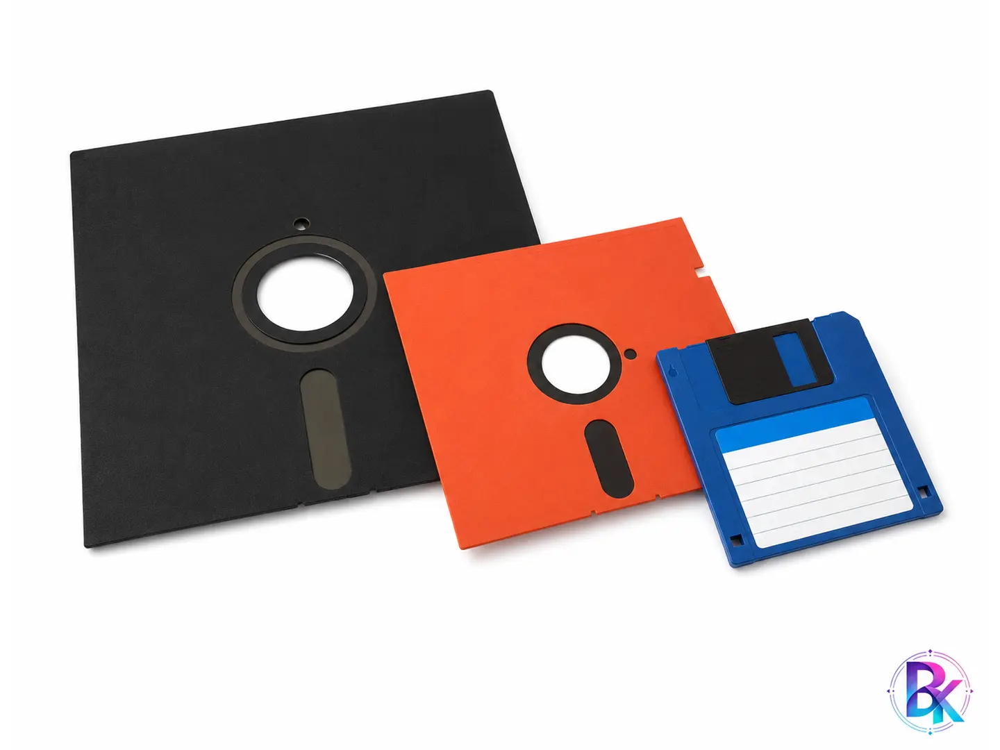
Types of Floppy Disk
1. 8-Inch Floppy Disk
यह सबसे पुरानी और Size में बड़ी Floppy Disk थी। इसका उपयोग प्रारंभिक Computer Systems में किया जाता था। इसकी Storage Capacity बहुत कम थी और यह आज पूरी तरह outdated है।
2. 5.25-Inch Floppy Disk
यह 8-Inch Floppy से छोटी थी और Personal Computers के शुरुआती समय में इसका उपयोग होता था। यह flexible होती थी और इसका cover भी पतला होता था।
3. 3.5-Inch Floppy Disk
यह सबसे popular Floppy Disk थी। इसका cover hard plastic का होता था, इसलिए यह पहले वाली Floppy Disks की तुलना में अधिक सुरक्षित थी। इसकी सामान्य Storage Capacity 1.44 MB होती थी।
2. CD (Compact Disc)
CD का Full Form Compact Disc है। यह एक Optical Storage Device है, जिसमें Data Laser Beam की सहायता से Read और Write किया जाता है। CD का उपयोग Music, Software, Documents और Small Videos Store करने के लिए किया जाता था।
CD में Data Circular Tracks में Store होता है। इसे पढ़ने के लिए CD Drive या Optical Disc Drive की आवश्यकता होती है। CD की सामान्य Storage Capacity लगभग 650 MB से 700 MB तक होती है।
Features of CD
- Optical Storage Technology।
- Laser Beam से Data Read होता है।
- Storage Capacity Floppy Disk से ज्यादा।
- Portable और Lightweight।
- Scratch होने पर Data Read करने में Problem आ सकती है।
Uses of CD
- Music Albums Store करना।
- Software Installation।
- Documents और Images Store करना।
- Educational Content और Tutorials Store करना।
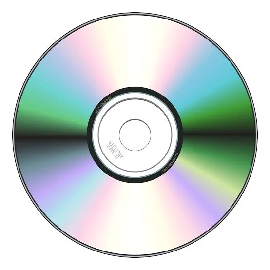
Types of CD
1. CD-ROM
CD-ROM का Full Form Compact Disc Read Only Memory है। इसमें Data पहले से Stored होता है और User उसे केवल Read कर सकता है। इसमें नया Data Write नहीं किया जा सकता।
2. CD-R
CD-R का Full Form Compact Disc Recordable है। इसमें User एक बार Data Write कर सकता है। Write होने के बाद Data को Erase या Rewrite नहीं किया जा सकता।
3. CD-RW
CD-RW का Full Form Compact Disc ReWritable है। इसमें Data को कई बार Erase करके फिर से Write किया जा सकता है।
3. DVD (Digital Versatile Disc)
DVD का Full Form Digital Versatile Disc है। यह CD की तरह ही एक Optical Storage Device है, लेकिन इसकी Storage Capacity CD से बहुत अधिक होती है। DVD का उपयोग Movies, Large Software, Games और Backup Data Store करने के लिए किया जाता है।
DVD में Data ज्यादा density में Store होता है। इसकी सामान्य Storage Capacity 4.7 GB से शुरू होती है और Dual Layer DVD में यह 8.5 GB तक हो सकती है।
Features of DVD
- CD से अधिक Storage Capacity।
- Laser Technology से Data Read/Write।
- Movies और Large Files के लिए useful।
- Portable और Lightweight।
- Scratch होने पर Data Corrupt हो सकता है।
Uses of DVD
- Movies Store करना।
- Large Software Installation।
- Games Store करना।
- Backup Storage।
- Educational Videos Store करना।
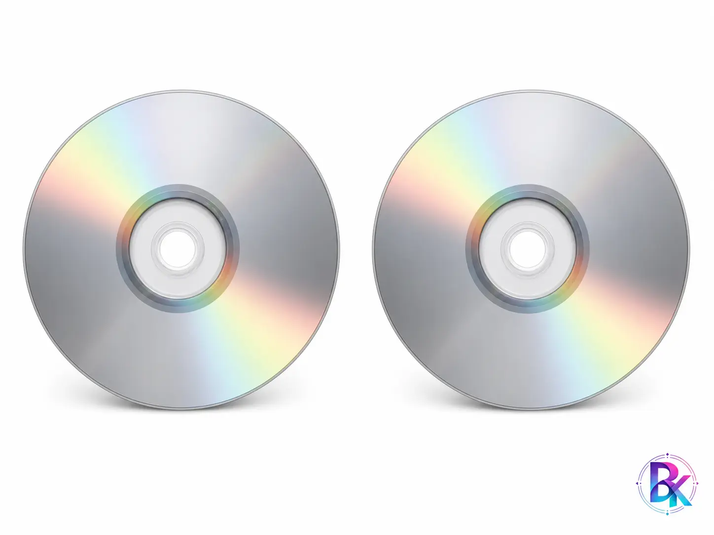
Types of DVD
1. DVD-ROM
DVD-ROM में Data पहले से Store होता है और User उसे केवल Read कर सकता है। Movies और Software Discs में इसका उपयोग होता है।
2. DVD-R
DVD-R में User एक बार Data Write कर सकता है। एक बार Data Burn होने के बाद उसे Erase नहीं किया जा सकता।
3. DVD-RW
DVD-RW में Data को बार-बार Erase करके फिर से Write किया जा सकता है। Backup और temporary storage के लिए useful है।
4. Dual Layer DVD
Dual Layer DVD में दो Storage Layers होती हैं, जिससे इसकी Capacity सामान्य DVD से अधिक होती है। इसकी Capacity लगभग 8.5 GB तक हो सकती है।
4. Pen Drive
Pen Drive एक modern Flash Storage Device है। इसे USB Flash Drive भी कहा जाता है। इसका उपयोग Data Store करने और एक Computer से दूसरे Computer में Data Transfer करने के लिए बहुत ज्यादा किया जाता है।
Pen Drive में Data Flash Memory में Store होता है। यह छोटा, lightweight, portable और fast होता है। आजकल Pen Drive की Storage Capacity 4 GB, 8 GB, 16 GB, 32 GB, 64 GB, 128 GB और उससे भी अधिक होती है।
Features of Pen Drive
- Small और Portable Device।
- USB Port से Connect होती है।
- High Storage Capacity।
- Fast Data Transfer।
- Data को कई बार Delete और Copy किया जा सकता है।
- CD/DVD की तुलना में ज्यादा durable।
Uses of Pen Drive
- Files Transfer करना।
- Documents, Photos और Videos Store करना।
- Software और Drivers रखना।
- Bootable USB बनाना।
- Backup रखना।
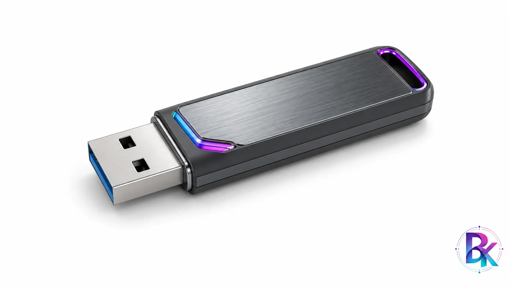
Modem (Modulator-Demodulator)
Modem
Modem का पूरा नाम Modulator/Demodulatorहै। यह एक महत्वपूर्ण networking device है, जिसका उपयोग Computer या अन्य networ devices को Internet से जोड़ने के लिए किया जाता है। Modem का मुख्य कार्य data signals को एक रूप से दूसरे रूप में परिवर्तित करना होता है, ताकि data को आसानी से भेजा और प्राप्त किया जा सके।
जब digital data को telephone line या अन्य communication medium के माध्यम से भेजा जाता है, तब Modem उसे analog signal में बदल देता है। इस प्रक्रिया को Modulation कहा जाता है। इसी प्रकार, जब analog signal वापस प्राप्त होता है, तो Modem उसे दोबारा digital signal में बदल देता है। इस प्रक्रिया को Demodulation कहा जाता है।
केवल digital signals (0 और 1) को समझ सकता है, जबकि पारंपरिक telephone lines मुख्य रूप से analog signals पर कार्य करती हैं। इसलिए Modem इन दोनों प्रकार के signals के बीच एक bridge का कार्य करता है। इसी कारण Modem को Signal Translator भी कहा जाता है, क्योंकि यह एक प्रकार के signal को दूसरे प्रकार के signal में परिवर्तित करता है।
आधुनिक समय में Modem का उपयोग broadband connection, DSL, cable Internet, fiber network तथा wireless Internet services में व्यापक रूप से किया जाता है। यह high-speed Internet connection प्रदान करने में महत्वपूर्ण भूमिका निभाता है और data transmission को तेज़, सुरक्षित तथा विश्वसनीय बनाता है।
Working of Modem
Modem मुख्य रूप से दो प्रक्रियाओं Modulation और Demodulation के माध्यम से कार्य करता है। यह digital signals को analog signals में तथा analog signals को digital signals में बदलकर data transmission को संभव बनाता है। इसकी कार्यप्रणाली निम्नलिखित चरणों में समझी जा सकती है—
Step 1: Data Generation
जब किसी Computer से data भेजना होता है, तो सबसे पहले वह digital form में तैयार किया जाता है। यह digital data केवल 0 और 1 के रूप में होता है, जिसे Computer आसानी से समझ सकता है।
Step 2: Modulation
इस चरण में Modem digital signals को analog signals में परिवर्तित करता है। इस प्रक्रिया को Modulation कहा जाता है। Digital data को एक carrier wave पर encode किया जाता है, ताकि वह communication medium (जैसे Telephone Line या Cable) के माध्यम से भेजा जा सके।
Step 3: Transmission
Modulation के बाद तैयार हुए analog signals को communication line के माध्यम से दूसरे Modem तक भेजा जाता है। इस प्रक्रिया को Transmission कहा जाता है।
Step 4: Demodulation
जब दूसरा Modem analog signals प्राप्त करता है, तो वह उन्हें पुनः digital signals में बदल देता है। इस प्रक्रिया को Demodulation कहा जाता है। इसमें carrier wave से digital data को decode किया जाता है, ताकि Computer उसे समझ सके।
Step 5: Data Decoding and Use
Demodulation के बाद प्राप्त digital data Computer को भेज दिया जाता है। इसके बाद Computer उस data को process, store या display करता है और आवश्यकता अनुसार उपयोग करता है।

Real Life Example
यदि Computer केवल Hindi समझता है और Telephone Line केवल English समझती है, तो दोनों के बीच Translation करने वाला व्यक्ति Modem की तरह कार्य करेगा। Modem दोनों प्रकार के Signals को एक-दूसरे की भाषा में बदलता है ताकि Communication संभव हो सके।
Storage Comparison
| Device | Technology | Speed | Portability |
|---|---|---|---|
| HDD | Magnetic | Medium | Internal/External |
| SSD | Flash | High | Internal/External |
| CD/DVD | Optical | Low | Portable |
| Pen Drive | Flash | Medium to High | Highly portable |
| Floppy | Magnetic | Very low | Portable but obsolete |